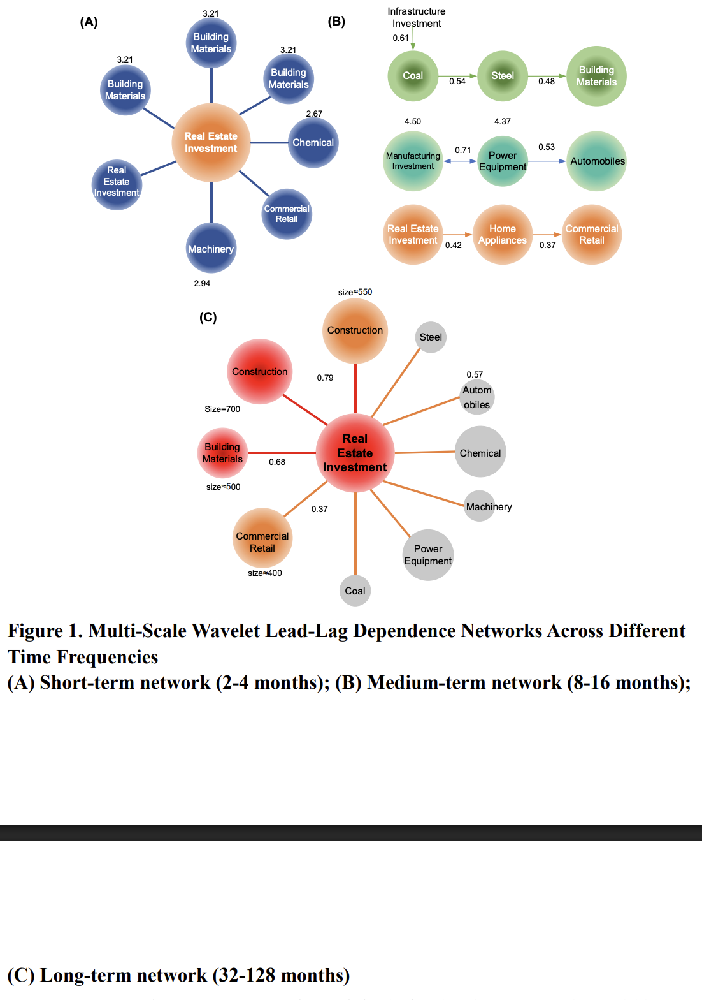
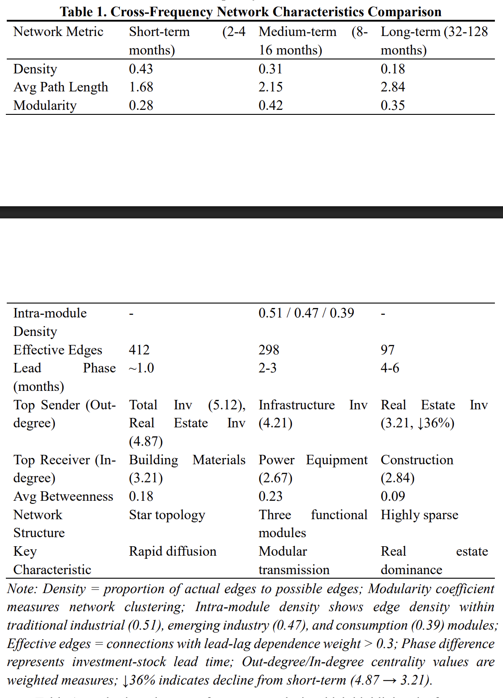
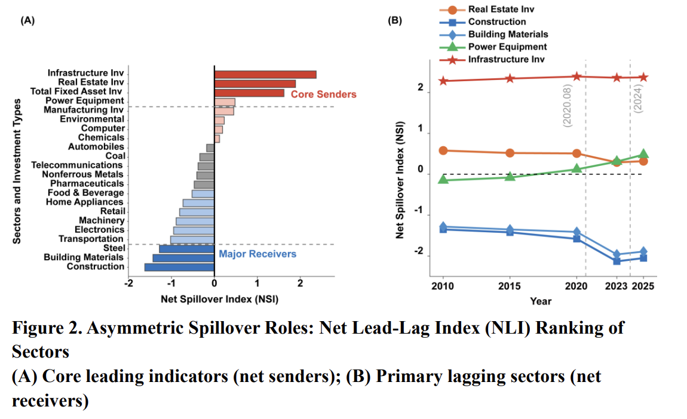
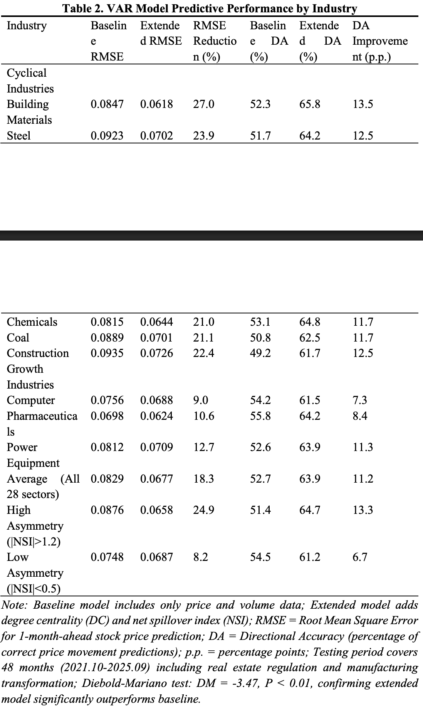
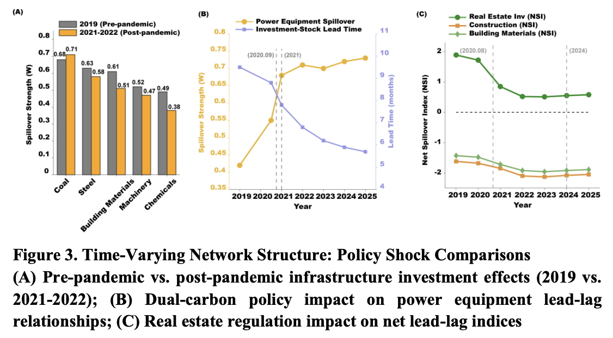
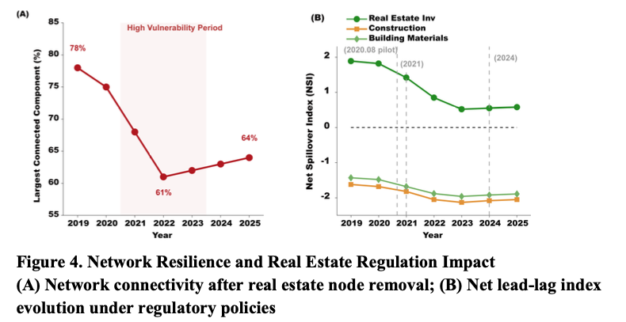
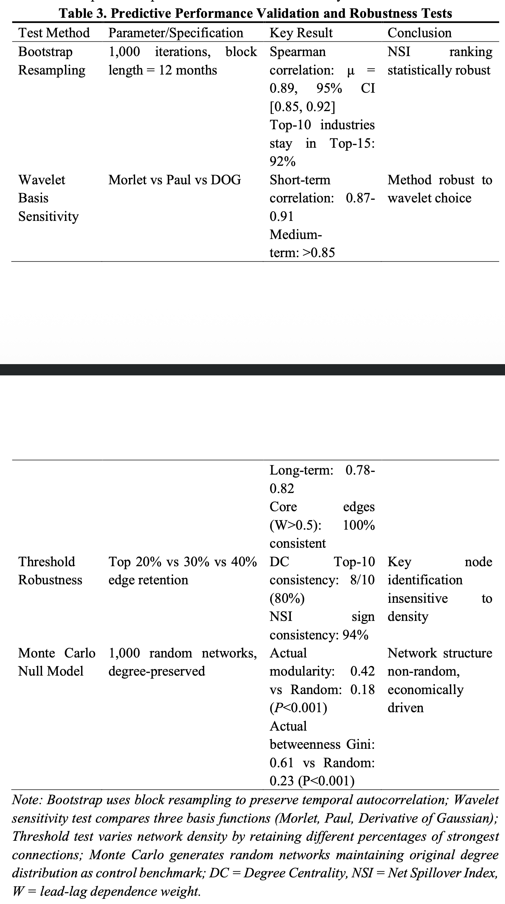
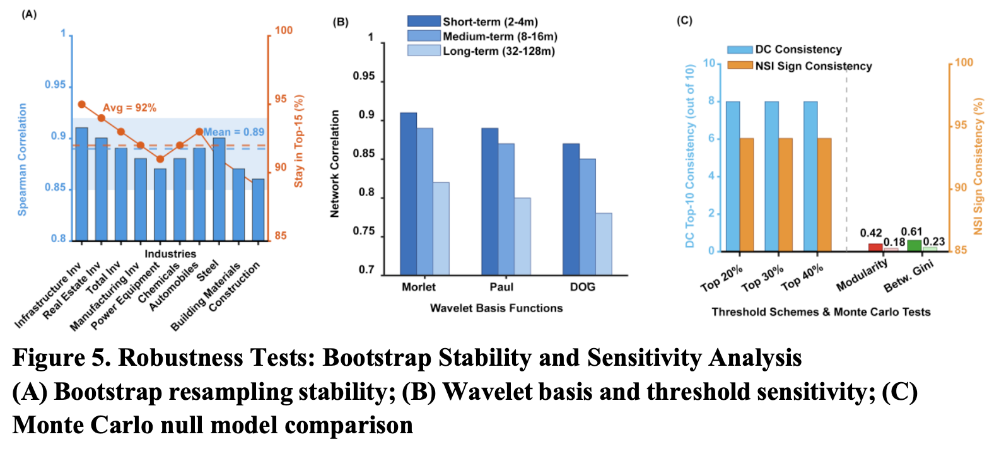

리뷰 ▷ 웨이블릿 lead-lag 의존성 네트워크로 본 중국 투자-주식시장 비대칭 전이
본 연구는 Morlet 웨이블릿 변환, 위상차 분석, 방향성 가중 네트워크 토폴로지를 결합한 시간-주파수 웨이블릿 lead-lag 의존성 네트워크 프레임워크를 개발하여 중국의 투자 사이클과 업종별 주식 수익률 간 비대칭 전이 메커니즘을 규명한다. 2010년 1월부터 2025년 9월까지 4개 투자 지표와 28개 업종에 대한 데이터를 이용하여, 본 프레임워크는 주파수 대역별로 lead-lag 네트워크를 분해하고, 고밀도 단기 확산에서 희소한 장기 의존성으로 이어지는 구조적 진화를 밝혀낸다. 네트워크 중심성 지표는 핵심 송신자, 주요 수신자, 양방향 전이 산업을 식별하며, 이는 신규 인프라 투자, 탄소중립 목표, 부동산 규제에서 비롯된 정책 주도적 네트워크 재구성을 반영한다. 롤링 윈도우 백테스트 결과, 연결 중심성(degree centrality)과 순 스필오버 지수(net spillover index)를 반영하면 주가 예측 정확도가 평균 18.3% 향상되며, 비대칭성이 높은 경기 순환 산업에서 개선 폭이 더 크다. 본 프레임워크는 방법론적 안정성과 비무작위적 경제 메커니즘을 확인하며, 규제 당국의 시스템 리스크 모니터링과 투자자의 동적 자산 배분을 뒷받침한다.
Keywords: wavelet coherence, lead-lag dependence network, investment cycle, sectoral stock returns, asymmetric transmission
1. 서론
투자 사이클은 금융경제학의 핵심 주제이며, 특히 중국 경제의 진행 중인 전환기에 더욱 중요하다. 거시경제의 핵심 동인으로서 자본시장과의 관계는 점점 더 복잡하고 동적인 특성을 보여 왔다. 2020년 이후 COVID-19 및 그에 따른 봉쇄 조치로 인해 중국 정부는 신규 인프라 건설, 탄소 피크 및 탄소중립 구축, 산업구조의 최적화와 고도화와 같은 일련의 중대한 전략적 조치들을 시행하였다. 이러한 정책 주도의 조치들은 가격 결정 메커니즘과 리스크 전이 경로를 변화시킴으로써 자본시장의 상태에 영향을 미쳤다 (Xia et al., 2020). 이러한 상황에서 투자와 주식시장 간 전이 메커니즘을 분석하는 전통적 프레임워크는 상당한 어려움에 직면해 있다. 정책 모호성의 지속적 누적은 기업의 위험 노출을 증가시키고, 기대 관리 채널을 통해 주식시장의 변동성을 더욱 심화시킨다 (Liu et al., 2025). COVID-19 팬데믹 기간 동안, 시장 간 전염 메커니즘의 복잡성은 글로벌 주가지수 간 팬데믹 관련 정책 불확실성의 스필오버 효과에 의해 더욱 확증되었다 (Su et al., 2025). 벡터자기회귀(VAR) 모델 및 Granger 인과성 검정과 같은 전통적 선형 접근법은 변수 간 평균적 관계를 정량화하는 데 이론적 장점이 있으나, 일반적으로 시간 불변 파라미터를 가정한다. 이러한 가정은 비대칭적, 다차원적, 척도 특이적 동학, 특히 서로 다른 투자 유형(인프라, 부동산, 제조업)이 서로 다른 업종별 주식에 미치는 이질적 영향과 시차 효과를 포착하는 능력을 제한한다.
요지: 2020년 이후 중국은 신 인프라·탄소중립·부동산 규제 같은 정책 충격이 계속 들어왔고, 이 때문에 “투자 → 주가”의 연결 고리가 시시각각 모양을 바꾸는 상태가 됐다. 그런데 기존 분석 도구(VAR, Granger 인과성)는 “변수 간 관계가 시간이 지나도 일정하다” 고 가정해서 이걸 못 따라잡는다.
구체적으로 전통 방법이 놓치는 세 가지:
- 비대칭 — “A가 B에 미치는 영향”과 “B가 A에 미치는 영향”의 크기·방향이 다름
- 다차원 — 인프라·부동산·제조업 투자가 28개 업종에 서로 다른 경로로 퍼짐
- 척도 특이적 — 단기(몇 개월) 반응과 장기(몇 년) 추세가 전혀 다른 패턴을 보임
예: 인프라 투자가 건축자재 주가를 1개월 뒤 끌어올리는 효과와, 부동산 투자가 가전 주가를 1~2년 뒤 움직이는 효과는 같은 VAR 안에 욱여넣기 어렵다. 그래서 “시간에 따라 변하고, 주파수별로 따로 보는” 도구가 필요하다는 모티베이션.
금융시장 상호연결성을 분석하기 위한 방법론적 지형은 세 가지 점진적 흐름을 따라 발전해 왔다. 첫 번째 흐름은 시간 영역 연결성 측정에 중점을 둔다. Diebold와 Yilmaz (Casoli & Pedini, 2026)는 일반화된 분산분해(generalized variance decomposition)에 기반한 스필오버 지수를 도입하여 시스템 리스크 전이를 정량화하는 기초적 프레임워크를 확립하였다. 그러나 시간 영역 접근법은 주파수 전반에 걸쳐 동질적 동학을 가정하므로, 단기 충격과 장기 구조적 의존성을 구분하는 능력이 제한된다. 두 번째 흐름은 연결성 분석을 주파수 영역으로 확장한다. 스펙트럼 분해 기법은 단기 및 장기 스필오버 성분을 별도로 식별할 수 있게 한다 (Lovcha & Perez-Laborda, 2020). 그럼에도 불구하고 이러한 주파수 영역 확장은 일반적으로 선형 VAR 구조에 의존하며, 각 주파수 대역 내의 시변 동학을 수용하지 못한다. 세 번째 흐름은 시간-주파수의 동시적 국소화를 달성하는 웨이블릿 분석을 활용한다. 따라서 시간 영역과 주파수 영역에서의 동시적 분해 특성 덕분에, 웨이블릿 분석 기법은 금융 자산의 공동 움직임(co-movement)을 연구하는 데 응용되어 왔다. 웨이블릿 일관성은 다양한 금융시장에 점점 더 널리 적용되고 있다. 핀테크, 녹색채권, 암호화폐 시장에서의 초기 적용 사례는 다중 스케일 의존 구조를 식별하는 데 있어 그 능력을 검증하였으며 (Le et al., 2021), 후속 연구들은 이 접근법을 녹색채권 시장의 위기 전이 분석 (Khalfaoui et al., 2023)과 글로벌 에너지 시장 연계 (Rehman et al., 2023)에까지 확장시켰다. 보다 최근의 연구는 외환 내재 변동성 (Yang, 2025) 및 통화정책 불확실성 스필오버 (Soltani & Abbes, 2025)에서 입증된 바와 같이, 웨이블릿 일관성이 시간 척도 전반에 걸쳐 이질적 정책 충격 전이를 포착함을 보여주었다. 나아가, 웨이블릿 기법을 TVP-VAR 등 전통적 계량경제 모형과 결합하는 방식은 보다 포괄적인 리스크 전이 특성화를 산출하였으며 (Gupta et al., 2020), 글로벌 관광 주식 및 채권 시장에서의 산업 수준 적용 사례는 본 방법론의 광범위한 적용 가능성을 확인해 준다 (Nahiduzzaman et al., 2025).
“시장 간 영향 분석” 방법론의 3세대 발전사 라고 보면 됨.
1세대 — 시간 영역만 (Diebold & Yilmaz, 2009/2012)
“A가 B에 얼마나 영향 주나”를 하나의 평균값으로 뽑음. 한계: 단기 충격(1~2개월)과 장기 구조(수년)가 한 숫자로 섞여버림. 투자→주가 반응이 단발성인지 추세성인지 구분 불가.
2세대 — 주파수 영역 추가 (Baruník & Křehlík, 2018 계열)
시간 영역 결과를 주파수 대역별로 쪼갬. 단기 스필오버와 장기 스필오버를 따로 볼 수 있게 됨. 한계: 여전히 선형 VAR 껍데기 안이라, 관계가 시간이 지남에 따라 변하는 현상(예: 코로나 전후의 구조 변화)은 못 잡음.
3세대 — 시간-주파수 동시 분해 (웨이블릿) ← 본 논문의 계열
“언제 / 어떤 주기에서 / 얼마나 같이 움직이나”를 2차원 평면(시간×주파수)으로 펼침. 최근 핀테크·녹색채권·암호화폐·외환·통화정책 스필오버 등에 폭넓게 쓰이고, TVP-VAR 같은 시변 모형과 섞어 쓰기도 함.
→ 즉 본 논문은 3세대 웨이블릿 위에 “네트워크 그래프”까지 얹는 게 포인트. “시간-주파수-네트워크” 3차원 구조를 동시에 본다는 야심.
스필오버 효과와 시간-주파수 분해를 측정하기 위한 다양한 방법론적 도구들이 문헌에서 개발되어 왔음에도 불구하고, 투자-주식 전이 메커니즘과 관련된 상당한 연구 공백이 세 가지 핵심 영역에서 여전히 충분히 연구되지 않은 채 남아 있다. 첫째, 대부분의 웨이블릿 기반 분석은 이변량 또는 저차원 일관성 측정에 국한되어 왔으며, 웨이블릿 일관성 행렬, 위상차 방향 결정, 네트워크 토폴로지를 체계적으로 결합하지 못했다. 이는 기존 연구들 가운데 어느 것도 스필오버 강도, 전이 방향, 네트워크 위치라는 3차원적 특성을 동시에 검토하지 못한 이유를 설명해 준다. 둘째, 최근 연구들이 글로벌 시스템적 중요 금융기관들 사이의 리스크 연계를 분석하기 위한 다계층 네트워크 접근법과, 글로벌 시스템적 중요 금융기관에 대한 다차원 리스크 연계 연구들을 정식화해 왔음에도 불구하고, 투자 사이클 지표를 다산업 주식 수익률에 매핑하면서 동시에 주파수 분해를 수행하는 방향성 가중 네트워크를 실증적으로 구현한 기존 연구는 없다 (Chen et al., 2025). 네트워크 기반의 시스템 리스크 문헌 분석이 해당 분야의 연구 핵심 영역과 진화 경로를 보여주고 있으나, 이질적 산업 특성을 가진 다중 노드 네트워크를 구축·분석하기 위한 운영 가능한 방법론을 제공하지는 못한다 (Rojas Rincón et al., 2025). 가장 중요한 연구 공백은 중국 주식시장과 관련된 산업 간 변동성 스필오버 및 시간적 동학 분석이다. 기존 연구 대부분은 시간 영역 방법론에 의존하고 있어, 특정 제도적 맥락 내에서 신규 인프라 및 이중 탄소(dual-carbon) 정책과 같은 구조적 충격, 그리고 이러한 충격이 시간-주파수 네트워크 채널을 통해 이질적 산업별 주식의 비대칭 전이 메커니즘에 어떤 영향을 미치는지에 관한 실증 분석이 제한적이다 (Xie & Wei, 2025).
앞 문단에 “Diebold와 Yilmaz (Casoli & Pedini, 2026)” 로 인용되어 있음. 일반화 분산분해 기반 스필오버 지수의 원전은 Diebold & Yilmaz (2009, Economic Journal) 및 (2012, IJF) 임. 2026년 논문이 원전일 수 없음 → 인용 꼬임, 혹은 LLM 생성 때 섞인 허위 인용(hallucinated citation) 의심.
서론 전반에 핀테크·암호화폐·관광 주식·FDI·외환 내재변동성 같은 주제 관련도 낮은 인용이 연이어 등장. “웨이블릿이 쓰였다”는 공통점만으로 묶여 있어서, 본 연구의 연구 공백(중국 투자↔︎업종 주가) 주장과 연결 고리가 약함. 리뷰어가 “왜 이 인용이 여기에?”라고 물을 확률 높음.
2. 방법론
2.1 데이터 출처 및 전처리
본 연구는 2010년 1월부터 2025년 9월까지 189개월에 걸친 중국 투자 사이클 데이터 및 업종별 주식시장 데이터를 사용한다. 투자 사이클 데이터는 중국 국가통계국(https://www.stats.gov.cn)에서 발간하는 월간 통계 보고서에서 수집되며, 네 가지 핵심 지표를 포함한다: 완료된 총 고정자산 투자는 월 누적 값을 1차 차분하여 월간 플로우로 변환하고, 부동산 개발 투자는 직접 공표된 월간 데이터를 이용하며, 제조업 투자는 통계 기준(statistical caliber) 조정 문제로 인해 산업 부가가치의 월간 전년동기 대비 성장률을 대리변수로 채택하고, 인프라 투자의 구축은 운송-창고-우편 서비스, 수리-환경-공공시설 관리, 전력-가스-수자원 생산 및 공급의 세 하위 부문 내 고정자산 투자를 합산하여 수행한다. 업종별 주식 데이터는 Wind Economic Database (https://www.wind.com.cn)에서 CITIC Level-1 업종 지수(2021년 판)의 월간 종가로 제공받으며, 은행(801780.SI), 비은행 금융(801790.SI), 부동산(801180.SI) 부문을 제외하여 28개 실물경제 업종을 유지하고, 월간 로그 수익률은 다음과 같이 계산된다:
\[r_t = \ln(P_t / P_{t-1}) \times 100 \tag{1}\]
이는 가격 시계열의 이분산성(heteroskedasticity)을 완화하면서 수익률의 시간적으로 일관된 집계를 가능하게 한다. 중국 거시경제 데이터셋에서 흔히 발견되는 계절적 공백 및 비정상성(non-stationarity)을 고려하여, 본 연구는 Census X-13 계절조정 및 달력효과 제거를 적용하고, 이어서 정상성 검정을 위한 augmented Dickey-Fuller 검정과 잔차 자기상관 검정을 위한 Ljung-Box Q 검정을 수행함으로써 중국 금융기관의 상호연결성 연구에서의 데이터 처리 표준을 준수한다 (Qi et al., 2022).
한 줄 요약
189행 × 32열짜리 월간 시계열 테이블 하나.
- 행(row) = 시점(2010년 1월부터 2025년 9월까지 189개 월)
- 열(column) = 변수 32개 (투자 지표 4개 + 업종 주가 28개)
각 열의 단위와 값 감
| 컬럼 종류 | 개수 | 단위 | 전형적 범위 | 가공 방식 |
|---|---|---|---|---|
| ① 총 고정자산 투자 (월간 플로우) | 1 | 조 위안 | 2010년 ~1조 → 2025년 ~8–10조 | 누적값 1차 차분 |
| ② 부동산 개발 투자 | 1 | 조 위안 | 2010년 ~0.3조 → 2021년 ~1.2조 → 2024년 ~0.7조 | 원본 월간 |
| ③ 인프라 투자 (3부문 합산) | 1 | 조 위안 | 2010년 ~0.5조 → 2025년 ~2–3조 | 운송+수리+전력가스 합 |
| ④ 제조업 산업VA YoY | 1 | 퍼센트(%) | −10 ~ +15 (코로나 시 −25) | 전년동월대비 성장률 |
| 업종별 주가 로그수익률 | 28 | 퍼센트(%) | 월간 보통 −20 ~ +20 | \(\ln(P_t/P_{t-1})\times 100\) |
실제 테이블 이미지 (감 잡기용 — 실제 본문 값 아님)
| 월 | 총투자(조) | 부동산(조) | 인프라(조) | 제조VA(%) | 건축자재(%) | 철강(%) | 전력설비(%) | 자동차(%) | 컴퓨터(%) | … (28개 전체) |
|---|---|---|---|---|---|---|---|---|---|---|
| 2010-01 | 0.8 | 0.22 | 0.32 | 20.7 | 4.2 | −1.8 | 6.3 | 8.1 | 2.1 | … |
| 2015-06 | 4.1 | 0.81 | 1.15 | 6.1 | −3.4 | −8.7 | 12.5 | −1.2 | −2.3 | … |
| 2020-04 | 3.8 | 0.78 | 1.02 | 3.9 | 11.2 | 6.8 | 18.4 | 7.3 | 4.7 | … |
| 2023-01 | 5.1 | 0.65 | 1.72 | 2.4 | −5.3 | −8.2 | −1.1 | 2.8 | 3.1 | … |
| 2025-09 | 8.1 | 0.68 | 2.43 | 5.8 | 2.1 | 1.3 | 4.2 | 5.6 | 6.9 | … |
이런 표가 189줄 쌓여 있다고 보면 됨.
“한 시점”의 구조
예를 들어 2023년 5월 한 달의 관측치는 아래 32차원 벡터 하나:
\[ \mathbf{v}_{2023\text{-}05} = (\underbrace{X_1, X_2, X_3, X_4}_{\text{투자 4개}},\ \underbrace{r_1, r_2, \ldots, r_{28}}_{\text{업종 수익률 28개}}) \]
- \(X_1\): 총 고정자산 투자 (조 위안)
- \(X_2\): 부동산 투자 (조 위안)
- \(X_3\): 인프라 투자 (조 위안)
- \(X_4\): 제조업 산업VA YoY (%)
- \(r_j\): \(j\)번째 업종의 월간 로그수익률 (%)
스케일이 완전 다른데 괜찮나?
맞음 — 투자는 조 위안 레벨이고 주가 수익률은 % 라서 자릿수가 크게 다름. 다만 이 논문이 쓰는 웨이블릿 일관성 \(R^2\) 는 정규화된 공동 움직임 측도라 크기 자체는 상쇄됨. 두 시계열이 “같은 리듬으로 오르내리느냐”만 보니까 스케일 차이는 문제 안 됨.
(정확히는 식(3)의 분모 \(S(s^{-1}|W_x|^2) \cdot S(s^{-1}|W_y|^2)\) 가 각 시계열의 에너지로 나눠주는 역할.)
28개 업종이 뭔지
본문에 나열은 없지만 CITIC Level-1(2021판)에서 금융 3개 빼면 대개:
석유석화, 석탄, 비철금속, 전력공익, 철강, 기초화학, 건축자재, 건축, 경공업제조, 기계, 국방군공, 자동차, 상업무역, 소비자서비스, 가전, 방직의류, 식품음료, 농림목어, 의약, 컴퓨터, 미디어, 통신, 전력설비·신에너지, 전자, 운송, 환경보호, 종합, 부동산서비스 등 (판본마다 약간 변동).
본문: “제조업 투자는 통계 기준(statistical caliber) 조정 문제로 인해 산업 부가가치의 월간 전년동기 대비 성장률을 대리변수로 채택”
- 산업 부가가치(industrial value-added)는 산출(output)이지 투자(investment)가 아님. 투자는 자본 스톡의 증분(flow into capital), 부가가치는 그 자본이 생산한 결과물. 두 변수는 이론적으로도, 회계적으로도 다른 계정.
- 이 치환으로 연구 질문이 “제조업 투자 사이클이 업종 주가를 선행하는가”에서 사실상 “제조업 경기가 주가를 선행하는가”로 바뀜. 산업생산과 주가의 공동 움직임은 이미 매우 잘 알려진 결과라 기여도(novelty)가 희석됨.
- 더 나아가 “4개 투자 지표”라는 서술 자체도 부정확해짐. 실질적으로는 3개 투자 + 1개 산출 이 섞여 있음.
권고: (i) 중국 통계국이 공표하는 제조업 고정자산투자 항목을 calibre 조정해서 재구축, 혹은 (ii) 논문 프레임과 변수명에서 “제조업 투자”를 “제조업 경기(manufacturing business cycle)”로 수정해 오도를 제거.
2.2 웨이블릿 일관성 lead-lag 의존성 네트워크 프레임워크
본 연구는 분산분해(variance decomposition) 유형의 구조적 충격 전이와 달리, 투자 사이클과 업종별 주식 수익률이라는 두 현상에 대한 시간 비대칭적 공동 움직임과 시간적 선행성을 정량화하는, 연속 웨이블릿 변환에 기반한 시간-주파수 lead-lag 의존성 네트워크 프레임워크를 개발한다. Morlet 웨이블릿의 해석적 표현은 다음과 같다:
\[\psi(t) = \pi^{-1/4} e^{i\omega_0 t} e^{-t^2/2} \tag{2}\]
중심 주파수 파라미터는 \(\omega_0 = 6\)으로 설정되며, 스케일 파라미터는 \(s \in \{2, 4, 8, 16, 32, 64, 128\}\)로 설정되어 2개월부터 128개월까지의 주기에 대응하며, 투자-주식시장 전이의 단기 충격, 중기 사이클, 장기 추세를 동시에 포착한다. 빠른 푸리에 변환(Fast Fourier transform)은 1024점 이산화를 통해 효율적 계산을 달성하며, 단일 시계열 변환의 복잡도는 \(O(N \log N)\)이다. 웨이블릿 일관성 측도는 두 시계열 간의 특정 스케일과 시점에서의 공동 움직임 강도를 정량화한다:
\[R^2(s,\tau) = \frac{|S(s^{-1}W_{xy})|^2}{S(s^{-1}|W_x|^2) \cdot S(s^{-1}|W_y|^2)} \tag{3}\]
한 줄 핵심
\(R^2(s, \tau)\) 는 “스케일 \(s\) 에서 두 시계열이 얼마나 같은 리듬으로 호흡하는가” 를 \([0, 1]\) 사이 값으로 잡는다. 값이 크려면 두 조건 모두 필요:
- 같은 주파수 성분이 양쪽 시계열에 존재 (겹치는 주기)
- 그 성분이 일정한 위상 관계를 유지 (구조적 연결)
시나리오별 \(R^2\) 값 — 모두 스케일 \(s=2\)개월 기준
🟢 예 1 — 완벽 동조 (같은 주기, 같은 위상)
x(t): /\ /\ /\ /\ /\ /\
y(t): /\ /\ /\ /\ /\ /\ (정확히 같이 진동)\(R^2 \approx 1.0\) (최대), 위상차 \(\phi = 0\)
🟢 예 2 — 같은 주기, 일정한 시차 (투자 → 주가 선행 케이스)
x(t): /\ /\ /\ /\ /\ /\ (인프라 투자)
y(t): /\ /\ /\ /\ /\ /\ (철강 주가, 1/4주기 지연)\(R^2 \approx 0.9\) (여전히 높음), \(\phi \approx \pi/4\)
→ 시차가 있어도 일정하게 유지되면 \(R^2\) 는 높음. 이게 본 논문이 lead-lag 관계를 잡아내는 원리.
🔴 예 3 — 주기가 다름
x(t): /\ /\ /\ /\ /\ /\ (2개월 주기)
y(t): /──\──/──\──/──\──/──\──/──\──/ (5개월 주기)\(R^2 \approx 0.1\) (낮음)
→ 스케일 \(s=2\) 에서 y의 에너지 \(|W_y|^2\) 가 거의 없음 (y 는 2개월 주기 성분이 없으니까). 그 주파수 대역에서 공유할 게 없음.
🔴 예 4 — 같은 주기, 위상이 들쭉날쭉
x(t): /\ /\ /\ /\ /\ /\
y(t): /\ \/ /\ \/ /\ \/ (위상이 뒤집어지며 불규칙)\(R^2 \approx 0.2\) (낮음)
→ 주기는 겹치지만 구조적 연결이 없음. 평활 윈도우 안에서 복소 교차 스펙트럼 \(W_{xy} = W_x \cdot \overline{W_y}\) 의 복소수들이 서로 상쇄됨(양의 복소수 + 음의 복소수 → 0 근처).
🔴 예 5 — 한쪽은 진동, 한쪽은 추세만
x(t): /\ /\ /\ /\ /\ /\ (진동)
y(t): ────────────────────────────→ (우상향 추세만)\(R^2 \approx 0.0\)
→ 스케일 \(s=2\) 에서 y 의 에너지 \(|W_y|^2 \approx 0\). 그 주파수 대역 자체가 비어 있음.
🔴 예 6 — 둘 다 독립 노이즈
x(t): 무작위 잡음 1
y(t): 무작위 잡음 2 (독립적으로 생성)\(R^2 \approx 0.0 \sim 0.1\) (작은 우연값)
→ 이게 논문의 몬테카를로 유의성 검정 이 걸러내는 영역. AR(1) 레드노이즈로 1000개 시계열을 생성해서 \(R^2\) 의 95% 분위수를 임계값으로 삼고, 그 이상만 “유의한 일관성”으로 유지.
요약 표
| 상황 | 같은 주기? | 일정 위상? | \(R^2\) |
|---|---|---|---|
| 완전 동조 | ✅ | ✅ (0차) | ~1.0 |
| 일정 시차 | ✅ | ✅ (상수) | ~0.9 |
| 다른 주기 | ❌ | — | ~0.1 |
| 같은 주기 + 랜덤 위상 | ✅ | ❌ | ~0.2 |
| 진동 vs 추세 | ❌ | — | ~0.0 |
| 독립 노이즈 | ❌ | ❌ | ~0.0–0.1 |
핵심: 위 두 조건(✅ + ✅)이 모두 만족될 때만 \(R^2\)가 커짐.
본 논문 맥락에서 실제로 일어나는 일
- 인프라 투자 vs 건축자재 주가: 같은 건설 경기 주기 공유 + 투자가 일정하게 선행 → \(R^2\) 높음, \(\phi > 0\)
- 인프라 투자 vs 컴퓨터 주가: 섹터 동학이 서로 다른 주기 → \(R^2\) 낮음 → 네트워크에서 엣지 약하거나 없음
- 제조업 vs 전력설비: 2020년 탄소중립 선언 이후 공통 주기(정책 드라이브) 강화 → \(R^2\) 가 0.42 → 0.71 로 상승 (본문 Figure 3B의 주장)
평활화 연산자 \(S\)는 시간 영역에서는 스케일 파라미터의 0.6배에 해당하는 이동 윈도우를, 스케일 영역에서는 0.6의 직사각형 윈도우를 사용한다. 위상차는 교차 웨이블릿 스펙트럼의 복소 편각(complex argument)을 통해 추출된다:
\[\phi_{xy}(s,t) = \arctan\left(\frac{\Im W_{xy}(s,t)}{\Re W_{xy}(s,t)}\right) \tag{4}\]
위상차란
교차 웨이블릿 스펙트럼 \(W_{xy} = W_x \cdot \overline{W_y}\) 는 복소수다. 복소평면 위에서의 각도가 바로 위상차:
- 복소수 \(a + bi\) 를 극좌표 \(re^{i\phi}\) 로 표현 → \(\phi = \arctan(b/a)\)
- 여기서 \(r\) 은 크기 (공동 움직임 강도, 식 3의 분자에 들어감)
- \(\phi\) 는 시점 차이 (두 신호 중 누가 얼마나 먼저인지)
직관: 두 싸인파가 있을 때, 파형을 나란히 놓고 “y 를 얼마나 밀어야 x 와 겹치는가” 가 위상차.
복소평면 위의 네 구역
Im (허수부) ↑
π/2
┌──────────┴──────────┐
│ │
② 역상 │ │ ① 동상
x가 y를 │ x가 y를 │
선행 │ 선행 │
(π/2, π) │ │ (0, π/2)
│ │
─π ───────┤ ├───── 0 → Re (실수부)
│ │
│ │
③ 역상 │ │ ④ 동상
y가 x를 │ y가 x를 │
선행 │ 선행 │ y가 x를
(-π, -π/2) │ │ 선행
│ │ (-π/2, 0)
└──────────┬──────────┘
-π/2- Im > 0 (위쪽): x 가 y 를 선행
- Im < 0 (아래쪽): y 가 x 를 선행
- Re > 0 (오른쪽): 동상(in-phase), 같이 오르내림
- Re < 0 (왼쪽): 역상(anti-phase), 반대로 움직임
네 구간의 의미 — 투자(x) vs 주가(y) 예시
| 구간 | 위상차 | 선행 관계 | 상관 부호 | 경제적 해석 |
|---|---|---|---|---|
| ① | \(\phi \in (0, \pi/2)\) | x → y | 양(+) | 투자 ↑ 하면 조금 뒤 주가 ↑ (정상 경기순환) |
| ② | \(\phi \in (\pi/2, \pi)\) | x → y | 음(−) | 투자 ↑ 하면 조금 뒤 주가 ↓ (과열·규제 우려 신호) |
| ③ | \(\phi \in (-\pi, -\pi/2)\) | y → x | 음(−) | 주가 ↑ 하면 조금 뒤 투자 ↓ (이상 신호) |
| ④ | \(\phi \in (-\pi/2, 0)\) | y → x | 양(+) | 주가 ↑ 하면 조금 뒤 투자 ↑ (기대 형성 후 현실화) |
📌 본문 서술의 한 구석: 논문은 \(\phi \in (-\pi, 0)\) 을 한 덩어리로 “y가 x를 선행” 이라 처리하는데, 엄밀히는 ③(음 상관)과 ④(양 상관)로 갈라봐야 대칭이 맞음. (앞선 비판모드 callout에서 짚은 지점)
위상차 → 실제 시차(개월) 변환
스케일 \(s\) 에서 한 주기(cycle)는 \(s\) 개월. 따라서:
\[\Delta t = \frac{\phi_{xy}}{2\pi} \cdot s \quad (\text{개월})\]
| 예 | \(s\) | \(\phi\) | 실제 시차 |
|---|---|---|---|
| 단기 | 2개월 | \(0.34\pi\) | \(\approx 0.34\) 개월 (≈ 10일) |
| 중기 | 8개월 | \(\pi/4\) | \(1\) 개월 |
| 중기 | 16개월 | \(\pi/4\) | \(2\) 개월 |
| 장기 | 64개월 | \(\pi/4\) | \(8\) 개월 |
같은 \(\phi\) 여도 \(s\) 가 커지면 개월 단위 시차는 비례해서 커짐. 단기 네트워크의 “1개월 선행”과 장기 네트워크의 “1년 선행”이 반드시 서로 다른 \(\phi\) 를 의미하지는 않음 — 서로 다른 \(s\) 일 수도 있음.
네트워크 엣지로 연결되는 흐름
식(4) 로 \(\phi\) 를 뽑고 → 식(5) 에서:
- \(\phi > 0\) 인 시점 집합 \(T_{ij}^+\) 만 골라냄 (x 가 y 를 선행하는 시기)
- 그 기간의 \(R^2\) 평균 → 엣지 가중치 \(W_{ij}\)
- 투자 노드 \(i\) → 업종 노드 \(j\) 방향의 가중 유향 엣지 완성
이렇게 모든 쌍에 대해 반복 → 방향성 가중 네트워크 한 장.
위상차 \(\phi_{xy}\)는 스케일 \(s\)에서의 진동적 공동 움직임 내의 시간적 선행성을 정량화한다: \(\phi_{xy} \in (0, \pi/2)\)일 때 시계열 \(x\) (투자)가 \(y\) (주식 수익률)를 양의 상관관계로 선행하고, \(\phi_{xy} \in (\pi/2, \pi)\)일 때 \(x\)가 \(y\)를 음의 상관관계로 선행하며, \(\phi_{xy} \in (-\pi, 0)\)일 때 \(y\)가 \(x\)를 선행한다. 이러한 lead-lag 프레임워크는 주파수 영역에서 특정 동기화 하의 정보 흐름 방향을 규정하지만, 계량경제학적 의미의 구조적 인과성에 대한 프레임워크를 구성하지는 않는다. 이는 일관성이 외생적 충격으로 설명되는 분산에 대한 기여가 아니라 공동 움직임의 강도를 측정하기 때문이다. 충격반응 전파와 달리 동기화된 주파수 대역 내의 시간 영역 선행성은 Granger 인과성이나 분산분해 기반 스필오버 지수와는 상이하면서도 상호보완적인 현상을 포착한다. 몬테카를로 시뮬레이션은 1계 자기회귀(AR(1)) 레드 노이즈(red noise)에 기반한 1000개의 참조 시계열을 생성하여 95% 신뢰구간을 구성하며, 일관성 강도 \(R^2\)가 임계값을 초과하는 시간-주파수 영역만을 유지한다. 이는 연결성의 구조적 변화 탐지 연구에서 검증된 유의성 검정 전략이다 (Greenwood-Nimmo et al., 2024).
방향성 의존 행렬의 구축은 일관성 강도와 위상차 방향성을 통합한다: 투자 지표 \(i\)와 업종별 주식 \(j\)에 대해, 양의 위상차를 갖는 시점 집합을 \(T_{ij}^{+}\) (\(i\)가 \(j\)를 선행하는 경우)로 정의하면, lead-lag 의존성 가중치는 다음과 같이 계산된다:
\[W_{ij} = \frac{1}{|T_{ij}^{+}|} \sum_{t \in T_{ij}^{+}} R_{ij}(s,t) \tag{5}\]
이 가중치 \(W_{ij}\)는 지정된 주파수 대역 내에서 투자 지표 \(i\)가 업종별 주식 \(j\)를 시간적으로 선행하는 기간 동안의 평균 일관성 강도를 측정하며, 충격 전이 규모보다는 예측적 정보 내용을 반영한다. 이로부터 도출되는 \(32 \times 32\) 차원의 방향성 가중 인접행렬 \(\mathbf{W}\)는 비대칭적 lead-lag 네트워크 구조를 포착하는데, 엣지 방향은 시간적 선행성을 나타내고 엣지 가중치는 동기화된 공동 움직임 강도를 정량화한다. 임계화(thresholding)는 상위 30 백분위수에 해당하는 연결만을 유지한다. 단기 네트워크 밀도 0.43, 중기 0.31, 장기 0.18로, 이는 유럽 금융 통합 연구에서의 네트워크 특성과의 비교 가능성을 유지한다 (Maurin et al., 2024). 알고리즘 작업 흐름은 다음과 같다: 4차원 투자 시계열 \(X\)와 28차원 업종별 수익률 시계열 \(Y\)를 입력하고, 각 스케일 \(s\)에 대해 연속 웨이블릿 변환, 일관성 및 위상차 계산, 몬테카를로 유의성 스크리닝, 위상 부호 기반 방향성 스필오버 누적, 시간 평균화, 임계화를 수행하여 다중 스케일 스필오버 행렬 집합 \(W(s)\)를 출력한다. 총 계산 복잡도는 \(O(M^2 NT \log N)\)이며, \(M=32\), \(N=189\), \(T=7\)로, 단일 스레드 실행 시 약 14분이 소요되고 병렬화 시 3.5분으로 단축된다.
(1) 위상차 해석의 비대칭 서술: 본문에서 \(\phi_{xy} \in (0,\pi/2)\) 양상관 선행, \((\pi/2,\pi)\) 음상관 선행까지 부호를 쪼개 놓고, \((-\pi,0)\)은 “y가 x를 선행”이라고 뭉뚱그림. 대칭적으로 \((-\pi/2,0)\) vs \((-\pi,-\pi/2)\)로 쪼개 부호(양/음 상관)를 분리해야 네트워크 엣지 해석이 일관됨.
(2) 식(5) 가중치의 frequency 정보 소실: \(W_{ij} = \frac{1}{|T_{ij}^{+}|}\sum_{t \in T_{ij}^{+}} R_{ij}(s,t)\). “i가 j를 선행한 기간의 평균 일관성”만 남기고 그 기간이 얼마나 길었는지(prevalence)는 분모에서 상쇄되어 사라짐. → 단 1기만 강하게 선행한 노드 A와, 100기 동안 꾸준히 같은 강도로 선행한 노드 B가 같은 \(W\) 값을 가질 수 있음. \(\frac{|T_{ij}^{+}|}{T} \cdot \bar{R}_{ij}\) 같은 빈도×강도 형태가 정보 흐름의 지속성을 담기에 더 적절함.
(3) \(32\times 32\) 인접행렬 vs 실제 \(4 \times 28\) 구조: 투자 4개 + 업종 28개 = 32노드이지만, 관심 대상 엣지는 투자→업종 방향 \(4\times 28 = 112\)개. 32×32 행렬에는 업종↔︎업종(784엣지), 투자↔︎투자(16엣지)도 포함되는데, 본문에서는 이들 엣지의 해석·처리가 전혀 언급되지 않음. (a) 모두 계산해서 자르는지, (b) 투자→업종만 계산하는지, (c) 업종 간 엣지가 중심성 계산에 섞여 들어가는지 불명확. 특히 업종 간 lead-lag를 섞으면 \(DC_j^{\text{in}}\)(업종 j의 내향 차수)이 투자 충격 수용도가 아니라 업종 간 상호연결까지 합쳐진 양이 됨 → 해석 붕괴.
(4) 임계화 vs 보고된 밀도의 불일치: 본문 “상위 30 백분위수에 해당하는 연결만을 유지”인데, 곧이어 “단기 밀도 0.43 / 중기 0.31 / 장기 0.18”로 보고. 동일 임계 규칙이면 밀도는 모든 대역에서 0.30이어야 함. 주파수별 임계값을 다르게 적용한 것인지, 몬테카를로 유의성 스크리닝과 임계화의 순서에 따라 밀도가 달라진 것인지 서술 필요.
2.3 네트워크 토폴로지 지표 및 비대칭성 측도
본 연구는 노드의 시스템적 중요성을 정량화하기 위해 세 가지 범주의 중심성 지표를 계산한다. 연결 중심성은 연결 강도 관점에서 노드의 영향력을 특성화한다: 외향 연결 중심성(out-degree centrality)
\[DC_i^{\text{out}} = \sum_j W_{ij} \tag{6}\]
은 노드 \(i\)로부터 유출되는 전체 예측적 정보 흐름을 누적하며, 내향 연결 중심성(in-degree centrality)
\[DC_i^{\text{in}} = \sum_j W_{ji} \tag{7}\]
은 해당 노드가 수신하는 외부 스필오버 강도를 집계한다. 매개 중심성(betweenness centrality)은 전역적 위상 관점에서 노드의 교량 역할을 평가한다:
\[BC_i = \sum_{s \neq i \neq t} \frac{\sigma_{st}(i)}{\sigma_{st}} \tag{8}\]
여기서 \(\sigma_{st}\)는 노드 \(s\)와 \(t\) 사이 최단 경로의 총 개수를, \(\sigma_{st}(i)\)는 노드 \(i\)를 경유하는 최단 경로의 수를 나타낸다. 합은 \(s \neq t\)이고 \(i \notin \{s, t\}\)인 모든 노드 쌍 \(s\), \(t\)에 대해 이루어진다. 이 지표는 복잡도 \(O(M^3)\)의 Floyd-Warshall 알고리즘을 통해 구현되며, 시스템적으로 중요한 기관을 식별하는 데 있어 그 효과가 은행 간 유동성 네트워크 연구에서 확인되었다 (Denbee et al., 2021). 고유벡터 중심성(eigenvector centrality)은 인접행렬의 최대 고윳값에 대응하는 고유벡터를 도출하여 네트워크 내의 위세(prestige) 흐름 메커니즘을 포착한다.
비대칭성 측도는 순 스필오버 지수를 통해 양방향 전이의 불균형을 정량화한다:
\[NSI_i = DC_i^{\text{out}} - DC_i^{\text{in}} \tag{9}\]
\(NSI_i > 0\)일 때 해당 노드는 순 스필오버 송신자로 작용하고, \(NSI_i < 0\)일 때는 순 수신자로 기능한다. 방향성 비대칭 비율(directional asymmetry ratio)은 이 측도를 표준화한다:
\[DAR_i = \frac{|NSI_i|}{DC_i^{\text{out}} + DC_i^{\text{in}}} \tag{10}\]
앞 단계에서 방향성 가중 네트워크 (32개 노드, 엣지 가중치 \(W_{ij}\)) 를 완성했음. 이제 각 노드의 시스템에서의 역할 을 숫자로 요약하는 단계. 다섯 지표가 각각 다른 질문에 답함.
식(6) 외향 중심성 \(DC^{\text{out}}\) — “얼마나 강한 송신자인가”
\[DC_i^{\text{out}} = \sum_j W_{ij}\]
노드 \(i\) 에서 나가는 모든 엣지 가중치의 합.
🎙️ 비유: 방송국의 총 송출 전력.
- 크면 → “다른 여러 노드를 강하게 선행하는 주도적 송신자”
- 논문 예: 단기 네트워크에서 인프라 투자 \(DC^{\text{out}} \approx 5.12\) → 거의 모든 실물업종 주가를 선행
식(7) 내향 중심성 \(DC^{\text{in}}\) — “얼마나 많이 받는가”
\[DC_i^{\text{in}} = \sum_j W_{ji}\]
노드 \(i\) 로 들어오는 모든 엣지 가중치의 합.
📻 비유: 라디오 수신기의 총 수신 신호량.
- 크면 → “여러 노드로부터 신호를 받아먹는 수동적 수신자”
- 논문 예: 건축자재 \(DC^{\text{in}} \approx 3.21\) → 사회 총 투자·부동산 투자 등을 이중으로 흡수
식(8) 매개 중심성 \(BC\) — “얼마나 중요한 교량인가”
\[BC_i = \sum_{s \neq i \neq t} \frac{\sigma_{st}(i)}{\sigma_{st}}\]
- \(\sigma_{st}\): 노드 \(s\) 에서 \(t\) 까지의 최단 경로 개수
- \(\sigma_{st}(i)\): 그중 \(i\) 를 경유하는 것의 개수
- 모든 쌍 \((s, t)\) 에 대해 그 비율을 합산
✈️ 비유: 공항 허브(인천공항). 최종 목적지도 출발지도 아니지만, 다른 도시로 가려면 거쳐야 하는 길목.
- 크면 → 정보 흐름의 병목(bottleneck). 이 노드가 사라지면 많은 쌍이 연결을 잃거나 우회.
- \(DC\) (출입 모두) 는 낮아도 \(BC\) 는 높을 수 있음 — “조용한 실세” 타입
- 논문 예: 화학 \(BC \approx 0.23\) → 투자와 하류 소비재 사이 가교
식(9) 순 스필오버 지수 NSI — “송신자인가 수신자인가”
\[NSI_i = DC_i^{\text{out}} - DC_i^{\text{in}}\]
내보낸 양에서 받은 양을 뺀 것.
💱 비유: 무역수지 (수출 − 수입).
| NSI | 의미 | 논문 예시 |
|---|---|---|
| \(> 0\) | 순 송신자 (수출국 타입) | 인프라 투자 \(+2.37\) |
| \(< 0\) | 순 수신자 (수입국 타입) | 건축 인테리어 \(-1.62\) |
| \(\approx 0\) | 양방향 균형 | 자동차 \(-0.18\) |
식(10) 방향성 비대칭 비율 DAR — “단방향성의 정도”
\[DAR_i = \frac{|NSI_i|}{DC_i^{\text{out}} + DC_i^{\text{in}}}\]
순 방향성 ÷ 전체 활동량. 범위는 \([0, 1]\).
📊 비유: “무역수지 절댓값 ÷ 총 무역량” = 무역의 불균형 비율.
| DAR | 의미 | 비유 |
|---|---|---|
| ~1.0 | 거의 단방향 (보내기만 / 받기만) | 순수 원자재 수출국 |
| ~0.5 | 한쪽 우세하지만 양쪽 다 있음 | 약간 수출 우위 |
| ~0.0 | 완전 양방향 균형 | 무역 균형 국가 |
왜 NSI 말고 DAR 도 필요한가: NSI 만 보면 “크기”만 잡히고 “얼마나 치우쳤는지”는 안 보임. 예컨대:
- A: \(DC^{\text{out}}=6\), \(DC^{\text{in}}=4\) → NSI \(=+2\), DAR \(=0.2\) (크게 활동하지만 비교적 균형)
- B: \(DC^{\text{out}}=2\), \(DC^{\text{in}}=0\) → NSI \(=+2\), DAR \(=1.0\) (작게 활동하지만 완전 단방향)
두 노드 NSI 는 같지만 성격이 완전히 다름. DAR 이 그 차이를 구별해줌.
논문 예: 인프라 투자 \(DAR = 0.81\) → 거의 일방적 송신자 (받는 건 거의 없음)
5개 지표 한눈에 — 축구 선수 비유
| 지표 | 축구 비유 | 묻는 질문 |
|---|---|---|
| \(DC^{\text{out}}\) | 슈팅 시도 횟수 | 얼마나 적극적으로 내보내나? |
| \(DC^{\text{in}}\) | 받은 패스 횟수 | 얼마나 많이 받나? |
| \(BC\) | 플레이메이커 역할 | 나를 거쳐야 플레이가 돌아가나? |
| \(NSI\) | 공격 기여 − 수비 기여 | 공격수인가 수비수인가? |
| \(DAR\) | 포지션 순도 | 전문 공격수/수비수인가, 만능 올라운더인가? |
이 5개를 각 노드(32개) × 각 주파수 대역(단기/중기/장기) 별로 계산 → “단기엔 송신자였다가 중기엔 수신자로 바뀌는” 역할 전환 패턴이 드러남. 본문 3.2절에서 전력설비가 “중기·장기 네트워크에서 순 송신자로 전환”되는 것이 이 프레임워크로 잡힌 결과.
비율이 1에 근접할수록 스필오버 관계가 단방향 전이 쪽으로 기울어져 있음을 시사한다. 이와 관련하여, 다계층 금융 네트워크 연구들은 위험 전염의 원천을 식별하는 데 있어 이 지표가 갖는 판별력을 지적해 왔다 (Gao et al., 2024). 강건성 검정은 네트워크의 3차원 구조의 신뢰성을 살펴본다. 예컨대 웨이블릿 기저함수 블록의 경우, Morlet, Paul, DOG 기저함수를 사용하여 네트워크 구조를 평가한다. 리샘플링 블록의 경우, 12개월 블록에 대해 1000회 생성 및 리샘플링을 수행한 후, 순 스필오버 지수 순위를 재계산하고 Spearman 순위상관계수를 이용하여 순위 안정성을 평가한다. 순위 강건성 블록의 경우, 연결 강도의 상위 20%, 30%, 40%를 유지하는 세 가지 방식을 사용하여 밀도 파라미터 변화에 따른 핵심 노드의 정체성 변화를 평가한다. 데이터 품질 및 일관성과 최소 15년의 시간 범위 커버리지 간의 균형을 맞추기 위해, 표본 기간은 2025년 9월에 종료되며, 이는 최대 스케일 파라미터인 128개월(10.7년)에서의 장기 웨이블릿 분해를 허용한다.
강건성 검정의 목적
연구 결과는 여러 분석 선택(analysis choice) 위에서 계산됨:
- 웨이블릿 어떤 함수로 잡을까 (Morlet?)
- 어떤 시점 표본을 쓸까 (2010~2025?)
- 엣지를 얼마나 유지할까 (상위 30%?)
이 선택 하나만 살짝 바꿔도 결과가 뒤집힌다면? → “그 선택 덕에 운좋게 나온 결과”라는 비판 가능. 각 선택에 대해 결과가 얼마나 안정적인지 확인하는 게 강건성 검정.
핵심 질문: 결과 \(= f(\text{기저함수},\ \text{표본},\ \text{임계값})\) 일 때, 세 인수 각각에 \(f\) 가 얼마나 민감한가?
세 블록이 세 개의 독립 축을 검사
| 블록 | 검증하는 축 | 묻는 질문 |
|---|---|---|
| ① 웨이블릿 기저함수 | 수학 도구 | “Morlet 말고 다른 웨이블릿으로도 같은 결과?” |
| ② 블록 리샘플링 | 표본 | “189개월이 아닌 다른 시점 조합이었어도 같은 결과?” |
| ③ 임계값 강건성 | 네트워크 정의 | “상위 30% 대신 20%·40%여도 같은 핵심 노드?” |
세 축이 서로 독립이라 하나만 검증하면 나머지에서 샌다. 예: Morlet을 고수한 채 표본만 바꿔 검증하면, “기저함수 덕에 결과가 나온 것”을 못 걸러냄. 그래서 세 블록 모두 필요.
블록 ① — 웨이블릿 기저함수 교체 (Morlet / Paul / DOG)
세 웨이블릿은 같은 CWT 프레임 안에서 다른 수학적 성격을 가짐:
| 웨이블릿 | 수학적 형태 | 특징 |
|---|---|---|
| Morlet (본 논문 기본) | 가우시안 × 복소 지수 | 주파수 국소화 우수, 위상 정보 선명 |
| Paul | 복소 다항식 | 시간 국소화 우수, 단기 사건에 민감 |
| DOG (Derivative of Gaussian) | 실수 함수 | 위상 정보 약함, 크기만 잘 잡음 |
→ 세 가지로 돌려서 네트워크 구조가 비슷하게 나오면 (논문 결과: 상관 0.78~0.91), “Morlet 덕에 나온 결과가 아님”을 확인.
🔧 비유: 같은 옷감을 재는데 줄자 / 접자 / 디지털캘리퍼 세 도구로 재봄. 세 측정치가 비슷하면 치수는 믿을 만함.
블록 ② — 12개월 블록 부트스트랩 리샘플링
왜 “개별 관측치”가 아니라 “12개월 블록”인가?
시계열 데이터는 시점 간 자기상관(autocorrelation)이 있음 → 개별 월(月) 을 랜덤하게 섞으면 시계열의 내부 구조가 부서짐. 그래서 블록 단위로 잘라서 섞음:
원본: [1월][2월][3월]...[189월]
│
▼ 12개월 블록으로 자름
[1-12월 블록][13-24월 블록]...
│
▼ 복원추출로 새 시계열 구성
[25-36월][1-12월][109-120월]... ← 이렇게 1000번 생성각 버전에서 NSI 순위를 다시 계산 → 1000개의 순위 리스트.
Spearman 순위상관계수 \(\rho = 0.89\) 는 “원본 순위와 리샘플 순위가 얼마나 일치하는지”:
- \(\rho = 1\) → 순위 완전 동일 (매우 강건)
- \(\rho = 0\) → 무관 (불안정)
- 0.89 → 표본이 조금 달랐어도 “어떤 업종이 송신자고 어떤 업종이 수신자인가”는 거의 그대로
🎲 비유: 같은 반 학생 100명 중 몇 명만 결석했다고 가정하고 반 평균을 다시 내봄. 1000번 반복했을 때 평균 순위가 크게 안 바뀌면 반 구조가 안정.
블록 ③ — 임계값 변경 (상위 20% / 30% / 40%)
식(5)의 \(W_{ij}\) 를 다 계산한 뒤 상위 몇 %만 엣지로 유지 하는 임계화 단계가 있었음. 기본은 30%인데, 만약 20%(더 엄격)나 40%(더 관대)였다면 다른 결과가 나올 수도 있음.
→ 세 임계값에서 상위 10개 연결 중심성 산업 중 8개가 공통으로 유지 (논문 결과). 즉:
- 30%에서 중심이던 8개 산업은 20%로 타이트하게 잘라도 살아남음
- 그리고 40%로 느슨하게 풀어도 여전히 중심
→ 임계값 선택이 결론의 핵심 식별(누가 중심 노드인가)을 바꾸지 않음.
🗺️ 비유: 서울 지하철 “주요 환승역”을 5개 꼽을 때 10개든 20개든 뽑아봐도 공통으로 포함되는 역(강남·잠실·사당 등)은 그대로.
세 블록 통과 → 강건성 주장 완성
각 블록은 다른 종류의 실패 가능성을 막음:
| 만약 이 블록이 없었다면 | 가능한 비판 |
|---|---|
| ① 빠짐 | “Morlet 특유의 평활 효과로 나온 인공 결과 아닌가?” |
| ② 빠짐 | “2020년 코로나 기간만 유독 특이한 샘플이어서 결과가 튄 게 아닌가?” |
| ③ 빠짐 | “상위 30%를 고른 저자의 임의 결정으로 네트워크 중심이 바뀐 게 아닌가?” |
세 개 다 통과 → “우리 발견은 방법·표본·정의 세 축 어디에도 크게 의존하지 않는다” 는 주장이 완성됨.
2.4 예측 성과 검증 프레임워크
예측 성과 검증을 고려한 롤링 윈도우 VAR 프레임워크가 사용되었으며, 학습 기간은 120개월, 검정 기간은 48개월(2021년 10월~2025년 9월)로 설정하고 연결 중심성과 순 스필오버 지수를 외생 예측변수로 사용한다. 기준 모형은 과거 수익률과 거시경제 변수만을 포함하며, 확장 모형에는 네트워크 토폴로지 변수들이 추가된다. 1개월 주가 예측은 평균제곱근오차(RMSE) 및 방향 정확도(DA)를 이용하여 평가되며, 성과 차이의 통계적 유의성은 Diebold-Mariano 검정을 통해 평가된다. 네트워크 회복탄력성(resilience)은 노드 제거 실험을 통해 평가되며, 부동산 투자 노드를 제거한 후 최대 연결 성분의 크기를 계산하여 시스템 분절 위험을 측정한다. 이 반사실적(counterfactual) 분석은 서로 다른 정책 체제에서 네트워크 연결성을 유지하는 데 있어 부동산 투자가 갖는 시스템적 중요성을 정량화한다.
방법론적 한계 및 통계적 해석. 구조적 충격반응이나 분산분해 기반 스필오버 지수와 달리, 웨이블릿 일관성 기반 네트워크 프레임워크는 주파수 특이적(frequency-specific) lead-lag 의존성 구조를 분석하고 정량화한다 (Diebold & Yilmaz, 2012; Sims, 1980). 다만, 동기화된 진동의 경우 위상차가 시간상 사건의 순서를 보여주지만, 추가적인 식별 제약이 없는 경우 외생성이나 구조적 인과성을 증명하지는 못한다는 점에 유의해야 한다. 네트워크 엣지를 기술할 때 사용되는 “스필오버”라는 용어는 충격의 크기라기보다, 대칭적이지 않은 공동 움직임 흐름에 기인한 예측의 방향으로 이해되어야 한다. 표본 외 성과(out-of-sample performance)와 롤링 윈도우 예측은 lead-lag 네트워크 구조가 경제적으로 유의미한 정보 흐름 패턴을 포착함을 실증적으로 확인한다. 이와 관련하여, 높은 외향 차수(out-degree, 다수의 다른 노드를 선행함)와 양의 순 lead-lag 지수를 가진 노드들은 네트워크의 횡단면 수익률 예측력을 통계적으로 강화한다. 따라서 본 네트워크는 거시경제 전이 채널과 부합하는 미래 지향적(forward-looking) 예측 관계를 포착하며, 구조적 연결성 측도에 대한 보완적 통찰을 제공한다.
(1) 기준 모형 명세 부족: “과거 수익률과 거시경제 변수만 포함”이 베이스라인인데 거시경제 변수가 무엇인지 전혀 명시되지 않음. 산업생산? CPI? 통화량? 금리? 환율? 몇 개 포함? 시차는? — 18.3% RMSE 감소라는 수치는 베이스라인이 약할수록 커지므로, 베이스라인이 불투명하면 효과 크기 해석 불가.
(2) 네트워크 중심성의 look-ahead 위험: 중심성이 전체 189개월 표본 위에서 한 번 계산되고 그 값이 48개월 out-of-sample 예측에 투입되었다면, 이것은 미래 정보를 과거 예측에 주입한 것 — 공정한 OOS 성능이 아님. 매 롤링 윈도우마다 네트워크를 재추정해야 하는데 본문에 명시가 없음. 재추정한다면 단일 스레드 14분 × 48회 = 약 11시간 → 실제 돌렸다면 명시 필요. 재추정하지 않았다면 18.3% 수치 전체가 look-ahead biased.
(3) “외생 예측변수”라는 표현의 순환성: 중심성은 웨이블릿 일관성에서 도출되고, 일관성은 투자·업종 수익률 시계열 자체에서 계산됨. 따라서 네트워크 중심성은 엄밀하게는 외생변수가 아니라 수익률의 비선형 변환. “외생(exogenous)” 표현은 용어 오용.
3. 결과
3.1 다중 주파수 lead-lag 의존성 네트워크 구조의 특성
투자 사이클과 업종별 주식 수익률 간 lead-lag 의존성 구조는 다양한 시간 척도에서 상당한 이질성을 보인다. 네트워크 토폴로지는 주파수에 따라 고밀도 단기 연계에서 희소한 장기 의존성으로 변화한다. Figure 1은 단기, 중기, 장기 주파수 계층에 걸친 다중 스케일 웨이블릿 lead-lag 의존성 네트워크의 전반적 모습을 제공한다.

Figure 1A는 2-4개월 내의 고밀도 상호연결이 가속화됨을 보여주며, 이는 예측적 lead-lag 관계를 통해 투자로부터 주가로의 정보 흐름을 신속하게 촉진한다. 건축자재는 내향 중심성 점수 3.21로 최상위에 위치하는데, 이는 사회 총 건설 투자와 부동산 투자(각각 lead-lag 의존성 가중치 0.87과 0.76)로부터의 이중 견인에 기인한다. 기계와 화학 업종은 각각 2.94와 2.67의 내향 중심성으로 그 뒤를 잇는다. 투자 지표는 주식시장을 약 1개월 선행하며, 위상차 \(0.34\pi\)는 8-10 거래일 간격에 대응한다.
“위상차 \(0.34\pi\)는 8-10 거래일 간격에 대응”
- 원 데이터는 월간(monthly) 이고, 최소 스케일이 \(s=2\)개월. 월간 시계열은 거래일(daily) 해상도를 구조적으로 가질 수 없음.
- 수식상으로는 \(s=2\)개월에서 \(\frac{0.34\pi}{2\pi}\times 2 = 0.34\)개월 \(\approx 10\)일이 나올 수 있지만, 이것은 “일별 데이터에서 10일”이 아니라 월간 주기의 위상차를 ‘일’ 단위로 환산한 수학적 기댓값. 월간 관측 한 점 사이의 내부 동학은 관측되지 않은 영역이라 일 단위 해석은 무근거.
- 본문 표현은 독자가 일별 고빈도 해상도가 있는 것처럼 오해하게 만듦. “월의 1/3에 해당하는 위상 진행” 정도로 쓰거나, 이 수치 자체를 빼는 편이 정직함.
투자 노드가 외향 중심성의 38%를 차지하는 스타 토폴로지는 투자가 지배적인 거시 선행지표로서의 위상을 강화한다. Figure 1B에서 보듯, 모듈성 계수가 0.42로 상승하는 모듈 구조가 존재하며, 이는 세 개의 기능적 하위 모듈로 세분될 수 있다: 전통적 산업 연쇄 모듈은 인프라 투자의 신호를 석탄, 철강, 건축자재로 전달하며 각각의 lead-lag 의존성 가중치는 0.61, 0.54, 0.48로, “투자-에너지-원자재-건설”의 연쇄를 형성한다; 신흥 산업 모듈은 제조업 투자를 강도 0.71로 전력설비와 연결한 뒤 0.53으로 자동차와 연결하여 구조적 전환을 시사한다; 소비 모듈에서는 부동산 투자가 후속 소비 품목인 가전 및 소매와 각각 0.42, 0.37로 연관된다.
Figure 1C는 전력설비와 제조업 투자 사이에서 양방향 전이가 발전하고 있음을 보여준다. 투자 진흥은 2010년부터 2015년까지 73%의 양의 위상차로 우세하였으나, 2021년 “3대 레드라인(three red lines)” 정책 이후 붕괴하여 0.32로 급락하였다. 2024-2025년에 예정된 “화이트리스트(whitelist)” 규제 완화 및 저렴한 주택 건설 정책에도 불구하고, 종단적 lead-lag 효과는 실질적인 회복의 부재를 계속 보여주며, 일관성은 0.28-0.35 구간에서 정체되어 있다. 이는 산업 연쇄 연계의 규제 관련 재구성이 상당 기간 지속되고 있음을 시사한다. Table 1은 세 가지 주파수 수준에서 네트워크의 위상적 특성과 핵심 노드 차수 측정 지표를 정량적으로 요약한다.

Table 1은 주파수 의존적 네트워크 구조 법칙을 강조하는 주파수 간 분석을 제시한다. 네트워크의 단기 고밀도 특성은 투자 지표와 업종별 주식 수익률 간의 급속한 공동 움직임을 반영한다. 총 투자와 부동산 투자의 외향 중심성은 각각 5.12와 4.87로, 다른 노드들보다 유의하게 높다. 스타 토폴로지는 신호 정책의 신속하고 효율적인 전파를 촉진한다. 또한 중기 네트워크 구조의 모듈성이 주목할 만한데, 모듈성 계수가 0.42에 이르러 단기 네트워크의 0.28에 비해 50% 높다. 세 하위 모듈 간에는 엣지 밀도에서 뚜렷한 차이가 있다: 산업 연쇄가 0.51로 가장 높고, 신흥 산업 모듈이 0.47, 소비 모듈이 0.39로 뒤를 이으며, 이는 산업 클러스터 간의 연계 변동성을 반영한다. 기간이 경과함에 따라 네트워크는 매우 뚜렷한 희소화 경향을 보이며, 이는 유효 엣지 수가 단기 네트워크의 412개에서 장기 네트워크의 97개로 감소한 것에서 확인된다. 부동산 투자 노드의 외향 중심성은 3.21로 여전히 최상위이지만, 단기 네트워크 대비 36% 감소한 수치이다. 매개 중심성이 0.18에서 0.09로 감소한 것은 장기 전이 경로에 대한 의존의 단순화와 집중을 보여준다. 단기 네트워크의 평균 경로 길이는 1.68이고 장기 네트워크는 2.84로, 더 크고 지연된 정보 전이가 낮은 주파수와 연관된다는 점은 시간 기반의 다중 스케일 lead-lag 의존 구조와 그 계층적 속성을 확인해 준다.
3.2 산업 비대칭 역할의 식별
산업 역할 분류별 순 스필오버 지수 분석은 투자-주식시장 네트워크 내에서 시스템적 송신자와 시스템적 수신자 간의 명확한 구분을 식별해 낸다. Figure 2는 각 산업의 순 스필오버 순위와 그 시간적 진화 경로를 도시한다.

Figure 2A는 가장 두드러진 시스템 구동 능력을 지닌 주요 핵심 선행 지표들을 보여준다. 인프라 투자는 순 lead-lag 지수 값 2.37과 방향성 비대칭 비율 0.81로 가장 강한 선행 강도를 나타낸다. 또한 전통 산업 연쇄 연계 내에서 중기 외향 중심성 4.21을 유지한다. 부동산 투자는 순 lead-lag 지수 1.89, 방향성 비대칭 0.76으로 다양한 주파수 범위에 걸쳐 상대적으로 높은 차수 특성을 유지하지만, 강도 면에서는 주목할 만한 하락이 나타난다: 평균 lead-lag 의존성 가중치(무차원 일관성 계수)는 2010-2020년 구간의 0.53에서 2021-2025년 기간의 0.29로 감소하였으며, 2024-2025년 구간에서는 0.32로 한계적 상승을 보여 지속적 규제 정책의 효과를 확인해 준다. 사회 총 고정자산 투자는 순 lead-lag 지수 1.62, 방향성 비대칭 0.68로, 건축자재 및 화학의 단기 네트워크에 대한 상당한 1-2개월 선행 연결을 반영하며, 이는 Granger 인과성 검정(F=8.34, P<0.01; F=7.21, P<0.01)에서도 뒷받침된다.
Figure 2B는 수동적 반응 위치에 있는 초기 후행 업종들을 보여준다. 건축 인테리어는 순 lead-lag 지수 -1.62와 내향 중심성 3.87을 보이며, 이는 부동산 투자 투입에 대한 강한 의존을 시사한다. 부동산-건축 연쇄의 웨이블릿 일관성은 2015-2018년의 0.82에서 2021-2023년의 0.45로 악화되었고 2024-2025년에는 0.38로 추가 약화되어 규제로 인한 취약성을 반영한다. 순 lead-lag 지수는 2021-2023년 동안 -1.62에서 -2.13으로 악화되었으며, 2024-2025년에는 -2.05로 한계적 개선을 보였다. 건축자재는 순 lead-lag 지수 -1.43과 내향 중심성 3.54를 보이며, 사회 투자와 인프라 투자로부터 단기 탄력성 1.27로 이중의 충격을 받는다. 철강은 순 lead-lag 지수 -1.28과 내향 중심성 3.21을 보이며, 이는 주가 분산의 62%가 투자로부터의 분산분해로 설명되는 전형적 수동적 반응을 시사한다.
“철강은 … 주가 분산의 62%가 투자로부터의 분산분해(variance decomposition)로 설명되는 전형적 수동적 반응”
그런데 앞선 2.2절·2.4절에서는:
- “분산분해 유형의 구조적 충격 전이와 달리, 본 프레임워크는 … lead-lag 의존성을 정량화”
- “네트워크 엣지의 ’스필오버’는 충격 크기가 아니라 예측 방향”
이라며 분산분해가 아님을 명시적으로 선 그어 놓았음. 본 프레임워크가 산출하는 것은 일관성 가중 lead-lag 가중치 \(W_{ij}\)이지, Cholesky·일반화 분산분해가 아님. “분산의 62%가 분산분해로 설명”이라는 수치는:
- 별도 VAR 모형에서 계산된 결과가 섞여 들어왔거나,
- 용어를 관행적으로 오용했거나 (예: 단순히 \(DC^{\text{in}}\)의 비율을 “분산분해”라 지칭),
- LLM 생성 과정에서 유사 표현이 주입됨
→ 방법론의 자기 정합성 훼손. 본문의 주 주장을 약화시키는 부분.
양방향 전이 산업들은 주파수에 따른 역할 전환을 보인다. 전력설비는 순 lead-lag 지수 +0.31과 방향성 비대칭 0.19를 보이며, 단기 네트워크에서는 순 수신자로 작용하는 반면, 중기 및 장기 네트워크에서는 순 송신자 역할로 전환된다. 이와 함께 외향 중심성 2.67은 내향 중심성 2.36보다 크다. 2020년 태양광 및 풍력 발전 설비 설치량 증가 이후 위상차는 +0.28에서 -0.17로 변하였으며, 순 lead-lag 지수는 2024-2025년에 +0.48로 상승하여 순 수신자에서 균형 송신자로의 전환을 완성한다. 자동차는 순 lead-lag 지수 -0.18, 방향성 비대칭 0.11로 균형 잡힌 양방향 특성을 유지한다. 화학 산업은 매개 중심성 0.23으로 구조적 공백(structural hole) 위치를 차지하며, 투자와 하류 소비재 간을 교량한다. 산업별 예측 검증 결과는 Table 2에 보고되어 있다.

Table 2의 VAR 롤링 윈도우 백테스트는 2021년 10월부터 2025년 9월까지 48개월 기간에 걸쳐 네트워크 위치 지표의 예측력을 확인한다. 연결 중심성과 순 스필오버 지수를 포함한 확장 모형은 기준 모형 대비 1개월 앞 주가 예측의 RMSE를 평균 18.3% 감소시키며, 방향 정확도는 11.2% 증가시킨다. 경기 순환 산업들이 가장 큰 개선을 보이는데, 건축자재, 철강, 화학이 각각 RMSE 27.0%, 23.9%, 21.0% 감소를 보여, 네트워크 중심성 정보가 투자 민감 산업의 가격 예측에 유용함을 뒷받침한다. 반면 컴퓨터와 제약과 같은 확장 업종은 각각 9.0%, 10.6%의 완만한 변화만 보여 네트워크 위치에 대한 의존이 낮음을 시사한다. 비대칭성 분석은 고비대칭 산업(\(|NSI|>1.2\))이 RMSE 24.9% 감소로 네트워크 지표로부터 더 많은 이득을 얻는 반면, 저비대칭 산업(\(|NSI|<0.5\))은 8.2%의 개선에 그쳐 이득이 더 적음을 제시한다. Diebold-Mariano 검정은 확장 모형이 기준 모형을 유의하게 능가함을 보여주며 (DM=-3.47, P<0.01), 부동산 규제 및 제조업 변화로 인한 구조적 단절을 포함하는 전체 검정 기간 동안 확장 모형은 예측의 강건성을 입증한다.
이 논문의 핵심 주장 중 하나가 여기 담겨 있음:
“고비대칭 산업 (\(|NSI|>1.2\)) 은 RMSE 24.9% 감소, 저비대칭 산업 (\(|NSI|<0.5\)) 은 8.2% 감소 — 네트워크 지표가 비대칭 산업에 특히 유용하다”
이 한 문장이 “네트워크 위상 정보 = 거래 가능한 리스크 프리미엄” 주장의 근거. 그런데 기반이 매우 약함.
1. 임계값 \(1.2\) 와 \(0.5\) 가 어디서 왔는지 아무 근거 없음
- 표본 분포 분위수(예: 상위 20%)도 아니고
- 경제 이론이 주는 자연 임계값도 아니고
- 강건성 검정(2.3절) 세 블록 중 어디에도 “NSI 임계값 민감도”가 없음
- 저자의 ad hoc 선택이라는 인상을 지우기 어려움
2. 임계값을 바꾸면 서사가 완전히 달라짐 — P-hacking 가능 공간
본문 실제 NSI 값을 대입해 시뮬레이션:
| 만약 기준이 이랬다면… | 고비대칭 그룹 | 저비대칭 그룹 | 예상 효과 |
|---|---|---|---|
| \(\|NSI\|>1.5\), \(<0.3\) | 더 극단적으로 선별 | 더 극단적으로 선별 | 격차 확대 (예: 30% vs 5%) |
| \(\|NSI\|>1.2\), \(<0.5\) (본문) | 6개 업종 | 2~3개 업종 | 24.9% vs 8.2% |
| \(\|NSI\|>1.0\), \(<0.7\) | 희석됨 | 희석됨 | 격차 축소 (예: 20% vs 15%) |
| \(\|NSI\|>0.8\), \(<0.8\) (연속 이분) | 대부분 포함 | 대부분 포함 | 격차 거의 사라짐 |
→ 저자가 여러 임계값을 시도해보고 격차가 가장 극적으로 벌어지는 조합을 골랐을 가능성을 배제할 수 없음. 사전 등록(pre-registration) 없이는 검증 불가능.
3. 이산 비교가 진짜 정보를 숨김
연구 질문이 “비대칭성이 네트워크 지표의 유용성을 결정하는가?”라면, 연속 관계를 보여야 정직함:
잘 그린 그림 (본문에 없음):
RMSE
개선률
│ ·
30%│ ··
│ ···
20%│ ·· · · ·
│ ···
10%│ ··
│ ··
0%└──┬────┬────┬──── |NSI|
0 1 2 3\(|NSI|\) vs 개선률의 산점도/회귀 한 장이면, 두 개의 단편적 요약(24.9%, 8.2%)이 주는 오해 없이 관계 모양을 전달 가능. 본문은 이 연속 그림을 일부러/무심코 두 개의 덩어리로 이산화했음. 그 결과:
- 중간 그룹 (\(0.5 \leq \|NSI\| \leq 1.2\)) 에 대한 성능은 침묵. 3~4개 업종이 이 구간에 있을 텐데, 그 결과만 공개해도 “정말 선형 관계인지” 판정 가능.
4. 토톨로지 위험 — 정의가 결론을 품고 있음
- 고비대칭 노드 = 한쪽 방향으로 크게 치우친 노드 (정의)
- 이런 노드는 네트워크 상 위치가 극단적 (정의에 내재)
- 극단적 위치는 위치 지표로 예측하기 쉬움 (자명)
→ “\(|NSI|\) 큰 노드가 네트워크 정보로 예측 잘 된다” = 거의 토톨로지. 앞서 논의 끝 callout 에서 지적한 “당연함의 정량화” 와 같은 맥락.
5. 이 흠결이 왜 치명적인가
- 논문의 정책 함의(“거래 가능한 리스크 프리미엄”, “동적 섹터 로테이션 전략”)가 대부분 이 격차 수치에 의존
- 격차가 임계값 cherry-picking 의 산물이라면, 18.3% 평균 효과 위에 얹힌 “특히 비대칭 산업에서 24.9%” 주장은 공중에 뜸
- 결론 5절의 “고비대칭 산업에서 예측 향상이 24.9%에 달하여, 네트워크 위상 위치 데이터가 거래 가능한(tradeable) 리스크 프리미엄을 대표함” 문장이 직격으로 약화됨
최소한의 방어 방안 (저자 입장에서 해야 할 것)
- 임계값 민감도 그리드: \(|NSI|\) 절단점을 \(\{0.3, 0.5, 0.7, 1.0, 1.2, 1.5, 1.8\}\) 에 대해 모두 돌려 RMSE 감소율 곡선을 제시
- 연속 회귀: \(\Delta\text{RMSE}_j = \alpha + \beta |NSI_j| + \epsilon_j\) 로 계수 \(\beta\) 의 유의성과 크기를 직접 보고
- 사전 등록: 분석 설계를 잠금한 뒤 OOS 성능 재측정
- 중간 구간 공개: \(0.5 \leq |NSI| \leq 1.2\) 인 업종들의 RMSE 감소율 개별 보고
세 가지 다 안 하고 두 수치(24.9%, 8.2%)만 던지는 현재 상태는 양적 주장을 뒷받침한다기보다 독자를 설득하기 위한 수사에 가까움.
3.3 정책 효과의 네트워크 구조에 대한 시변 분석
특정 정책의 시행은 투자-주식시장 lead-lag 의존성 네트워크의 위상 형성을 변화시키며, 네트워크 속성은 정책 시행 전후에 걸쳐 방법론적 재구성을 보여준다. Figure 3은 팬데믹 전후 및 이중 탄소(dual-carbon) 정책 기간 동안의 네트워크 구조 차이를 도시한다.

Figure 3A는 팬데믹 전후의 네트워크 구조 변화를 강조하며, 전이 경로의 재구성을 보여준다. 2019년 중반, 인프라 투자는 석탄, 철강, 건축자재, 기계, 화학으로 이어졌으며 lead-lag 의존성 가중치는 각각 0.68, 0.63, 0.61, 0.52, 0.49였다. 2021-2022년 중반에 이르러 순위는 전력설비, 건축자재, 환경보호, 자동차, 컴퓨터로 바뀌었으며 가중치는 각각 0.71, 0.58, 0.51, 0.47, 0.38이었다. 전력설비의 강도는 67% 증가한 반면, 석탄은 측정 가능한 수준으로 하락하였고 철강은 8% 감소하였다. 이는 전통 인프라에서 신(新) 인프라로의 전략적 전환을 반영한다.
Figure 3B는 이중 탄소 정책이 발전설비에 미치는 효과를 도시한다. 2020년 9월 탄소중립 선언 이후, 투자-주식의 선행 시차는 2021년까지 8-10개월에서 4-6개월로 단축되었으며, 이로 인해 가격 결정 효율이 42% 개선되었다. 2024-2025년 기간에는 전력설비의 lead-lag 의존성 강도가 0.73에서 유의하게 안정화되는 현상이 관찰되었는데, 이는 태양광 설치량의 높은 수준 유지와 시기를 같이한다. 에너지 저장 및 수소 에너지와 같은 신흥 하위 업종은 독립 노드 특성을 드러내 산업 가치사슬의 뚜렷한 수직적 해체를 반영한다.
Figure 3C는 부동산 규제가 네트워크 비대칭성에 미치는 효과를 드러낸다. “3대 레드라인(Three Red Lines)” 정책은 부동산 투자의 선행 역할을 유의하게 축소시키고 하류 산업의 수동적 위치를 악화시켰다. 순 lead-lag 지수의 진화에 대한 상세 분석은 Figure 4B에 제시된다. 네트워크 회복탄력성 검정은 Figure 4와 같이 부동산의 투자 노드를 제거하여 시스템의 충격 대응 능력을 평가한다.

Figure 4A는 부동산 노드 제거 검정을 바탕으로 네트워크 회복탄력성을 검토한다. 2019년 부동산 노드를 제거했을 때 최대 연결 성분은 노드의 78%를 유지했다. 이 비율은 2022년 61%로 유의하게 감소하였고, 2024-2025년에는 64%로 소폭 반등했지만 여전히 2019년에 비해 현저히 낮다. 이는 부동산 규제가 전통 산업 연쇄에 지속적인 단절 위험을 야기함을 부각시킨다.
“부동산 투자 노드 제거 → 최대 연결 성분 78% → 61% → 64%” 라는 숫자 자체 는 계산으로 나올 수 있지만, 이를 “부동산 규제의 지속적 단절 위험” 이라고 결론짓기엔 방법론이 너무 가벼움. 표준 네트워크 회복탄력성 문헌이 요구하는 요소들이 대부분 빠져 있음.
1. 부동산 투자 노드는 “허브(hub)”가 아니라 “소스(source)”
네트워크 회복탄력성 실험의 원 취지는 병목 역할의 허브를 파괴했을 때의 충격 을 보는 것 (Albert-Jeong-Barabási 2000 계열). 그런데 본 논문의 투자 4개 노드는 주로 업종에 엣지를 내보내는 입력층 임:
- \(DC^{\text{out}}\): 매우 큼 (부동산 투자 4.87)
- \(DC^{\text{in}}\): 거의 0 (업종 → 투자 방향 엣지 미미)
즉 부동산 투자 노드를 “제거” 하는 것은 병목 허브 파괴가 아니라 “4개의 입력 신호 중 하나를 끄는 것” 에 가까움. “노드 제거 실험”이라는 포맷을 빌려오긴 했지만 해석 프레임이 맞지 않음.
2. 업종 간 엣지 구조의 불투명성이 결과 해석을 흔듦
앞서(2.2절 비판모드) 지적한 “32×32 vs 실제 4×28” 문제가 여기서 직격으로 작동:
- 업종↔︎업종 엣지가 거의 없다면: 부동산 투자 1개 빼도 다른 3개 투자로 업종들이 연결됨 → 최대 성분 크기가 거의 변하지 않아야 함
- 78 → 61 변화가 실제로 발생했다면: 업종 간 엣지가 상당히 많이 포함돼 있어야 함 → 네트워크가 투자-업종 이분 구조가 아니라는 뜻 → 논문의 “투자→업종 선행” 내러티브와 충돌
두 경우 모두 본문 설명과 불일치. 어느 쪽인지 구조 명시 없음.
3. 무작위 노드 제거 baseline 부재 — 비교 기준 없음
“부동산 제거 시 61%”가 특별히 타격이 큰 값인지 알려면 대조군 필요:
- 무작위 제거 baseline: 32개 노드 중 하나를 무작위로 뽑아 제거 → 평균 최대 성분 크기 계산 (여러 회 반복)
- 다른 투자 노드 제거: 총투자·인프라·제조업을 각각 제거했을 때 비교
- 업종 노드 제거: 건축자재·철강 같은 고차수 업종을 뺐을 때 비교
이 대조군이 없으므로, 61% 라는 숫자가 “부동산 특유의 시스템적 중요성”을 반영하는지, 아니면 “어떤 노드 하나 빼도 61% 부근”인지 구별 불가.
4. 통계적 유의성 주장의 근거 누락
본문: “이 비율은 2022년 61%로 유의하게 감소”
- 단일 시점의 최대 성분 크기 = 단일 점 추정. 이게 이전 시점과 “유의하게” 다르려면 불확실성 측정 필요.
- 방법: bootstrap resampling (시계열 블록 리샘플링 후 네트워크 재추정, 각 버전에서 제거 실험 반복) → 61%의 95% CI 산출
- 본문엔 신뢰구간도 p-value도 없음. “유의하게”라는 표현 자체가 부적절.
5. 전반적 네트워크 희소화와 혼동
2022년 네트워크 자체가 부동산 규제와 무관하게 전체적으로 더 성긴 상태일 수 있음 (예: 코로나 이후 산업 동학 둔화로 전반적 일관성 감소). 이 경우:
- 어떤 노드를 빼도 2022년엔 최대 성분 크기가 낮게 나옴
- 부동산 노드 제거의 “고유 효과”가 아니라 밀도 변화의 부산물
이를 분리하려면 “같은 시기의 무작위 제거 평균”으로 정규화해야 함. 즉 표적 제거 / 무작위 제거 비율을 봐야 함. 본문은 원 수치만 보고.
6. 인과 해석의 도약 — “단절 위험” 귀속
78 → 61 → 64 라는 변화를 부동산 규제 탓 으로 돌리지만 동일 기간 공변량:
- 2020: COVID-19 글로벌 충격
- 2020.9: 탄소중립 선언 (산업 구조 재편)
- 2021: 미중 갈등, 공급망 교란
- 2022: 러우 전쟁, 글로벌 인플레·금리 상승
- 2024: 중국 소비 부진, 디플레 우려
→ 네트워크 구조 변화를 “부동산 규제 때문” 이라고 단정하기 어려움. 반사실(counterfactual) 없이 사후 서사.
7. 표준 네트워크 회복탄력성 체크리스트 대비
| 표준 요소 | 본문 수행 | 누락 여부 |
|---|---|---|
| 여러 노드 순차 제거 후 resilience 곡선 | ❌ | 누락 |
| 표적 제거 vs 무작위 제거 비교 | ❌ | 누락 |
| Bootstrap CI / 불확실성 정량화 | ❌ | 누락 |
| 엣지 제거(attack) 실험 병행 | ❌ | 누락 |
| 밀도 통제된 정규화 | ❌ | 누락 |
| 다른 노드 제거 시 동일 효과 여부 | ❌ | 누락 |
| 점 추정치 단일 보고 | ✅ | 유일하게 수행 |
→ 문헌 표준(Albert et al. 2000, Cohen et al. 2001) 기준으로 볼 때 가장 기본적 포맷 만 흉내낸 수준. “네트워크 회복탄력성 검정”이라 부르기엔 과함.
요약
결국 이 실험은:
- 계산 과정: 기계적으로는 수행 가능 (숫자 나옴)
- 해석: “부동산 규제가 단절 위험을 야기”라는 주장을 지탱하기엔 근거 너무 빈약
- 방법론: 네트워크 회복탄력성 문헌의 표준 프로토콜에서 크게 이탈
- 인과 귀속: 동시대 다른 거대 충격(코로나, 미중갈등, 금리)을 통제 안 함
→ 본 실험은 “정성적 관찰” 수준의 증거이지, 결론 5절이 주장하는 수준의 “시스템 리스크 모니터링 프레임워크” 근거로는 부적합.
Figure 4B는 부동산 규제가 네트워크 비대칭성에 미치는 영향을 드러낸다. “3대 레드라인(Three Red Lines)” 정책(2020년 8월 시범 시행, 2021년 본격 시행)은 부동산 투자의 순 lead-lag 지수를 +1.89에서 +0.52로 축소시켰고, 건축 지수를 -1.62에서 -2.13으로 악화시켰으며(수동성 31% 증가), 건축자재 지수도 -1.43에서 -1.96으로 악화시켰다. 2024년 “화이트리스트(whitelist)” 및 저렴한 주택 규제 완화에도 불구하고, 부동산 지수는 +0.58로 한계적으로만 개선되었고 건축은 -2.05에 그쳤으며, 산업 연쇄의 취약성은 지속되었다. 통합적 통화완화와 신(新)질적 생산성 혁신은 2024년 9월 금리 인하 이후 네트워크를 재구성하였다; 제조업 투자의 기계 및 설비에 대한 lead-lag 강도는 0.48에서 0.56으로 증가하였고, 첨단 제조업의 컴퓨터 및 통신 부문에 대한 강도는 0.38에서 0.51로 강화되었다. 이는 표적 구조적 정책 전이의 효과를 검증한다. 부동산 투자의 순 lead-lag 지수는 +0.52에서 +0.58의 낮은 범위에서 정체 상태를 유지하였다. 이는 “신(新)동력 강화, 구(舊)동력 약화”라는 차별화된 패턴을 반영하며, 거시 정책이 미시 수준의 전이 메커니즘에 미치는 이질적 효과를 정량적으로 식별해 준다.
3.3이 하는 일 한 줄
“네트워크가 정책 이벤트 전후로 어떻게 바뀌었는가” 를 보이기 위해, 2.2의 파이프라인을 시점 부분집합별로 재실행해서 여러 장의 네트워크 스냅샷을 비교.
기본 아이디어
식(3)의 \(R^2(s, \tau)\) 와 식(4)의 \(\phi(s, \tau)\) 는 이미 시간축 \(\tau\) 에 국소화되어 있음. 그래서 전체 189개월 평균이 아니라 특정 기간의 \(\tau\) 값만 골라 식(5)를 재적용하면, 그 기간의 네트워크 스냅샷을 뽑을 수 있음.
전체 189개월 (2010.1 ~ 2025.9)
│
├── 부분집합 A: 2019년 중반 근처 ──► 네트워크 스냅샷 A
├── 부분집합 B: 2021~2022년 중반 ──► 네트워크 스냅샷 B
├── 부분집합 C: 2024~2025년 ──► 네트워크 스냅샷 C
│
▼
스냅샷끼리 비교해서 변화 측정즉 같은 공장(2.2)을 시기를 바꿔가며 여러 번 돌리는 것. 식 자체가 새로 나오진 않음.
Figure 3 — 정책 이벤트별 네트워크 변화
Figure 3A: 팬데믹 전후 (2019 중반 vs 2021~2022 중반)
각 기간에서 인프라 투자에서 나가는 상위 5개 엣지 를 꼽고 비교:
| 시기 | 상위 수신 업종 (가중치) |
|---|---|
| 2019 중반 | 석탄(0.68), 철강(0.63), 건축자재(0.61), 기계(0.52), 화학(0.49) |
| 2021~22 중반 | 전력설비(0.71), 건축자재(0.58), 환경보호(0.51), 자동차(0.47), 컴퓨터(0.38) |
→ 전력설비 +67%, 석탄·철강은 감소/하락. “전통 인프라 → 신(新) 인프라” 전환의 정량적 증거라고 주장.
Figure 3B: 이중 탄소 정책 (2020년 9월 탄소중립 선언)
위상차 \(\phi\) 를 시차(개월)로 환산 해서 시간 변화 추적.
- 선언 이전 → 이후: 전력설비 lead-lag 시차 8~10개월 → 4~6개월 단축
- 일관성 \(R^2\) 값: 0.42 → 0.71 로 상승
- 2024-25: 0.73 수준에서 안정화 (태양광 설치량 유지와 동기화)
→ “정책 기대 관리가 가격 결정 효율을 42% 높였다”는 주장.
Figure 3C: 3대 레드라인 (부동산 규제)
부동산 투자 → 건축 인테리어의 양의 위상차 비중 변화 추적.
- 2010~15: 73% (정상 진흥)
- 2021 3대 레드라인 후: 0.32 로 급락
- 2024~25 화이트리스트 완화 후: 0.28~0.35 (회복 실패)
→ 양의 위상차 비중이 무너졌다는 건 “부동산 투자 → 건축 인테리어”가 더 이상 일정한 lead-lag 관계가 아님 을 의미.
Figure 4 — 회복탄력성과 NSI 진화
Figure 4A: 노드 제거 실험
특정 시기의 네트워크에서 부동산 투자 노드를 삭제하고, 남은 그래프의 최대 연결 성분(largest connected component) 크기를 측정:
부동산 노드 제거 전 (원본): 32 노드 모두 하나의 컴포넌트
│
│ 부동산 노드 삭제
▼
부동산 노드 제거 후: 일부 노드가 고립되기도, 컴포넌트가 쪼개지기도
│
▼
"최대 컴포넌트 크기 / 전체 노드 수"를 복원탄력 지표로 사용| 시기 | 제거 후 최대 성분 크기 | 의미 |
|---|---|---|
| 2019 | 78% (≈ 25개) | 부동산 빠져도 구조 유지 |
| 2022 | 61% (≈ 20개) | 12개 노드가 고립/단절 |
| 2024~25 | 64% | 소폭 회복하지만 여전히 취약 |
→ “부동산 규제가 실물경제 네트워크의 구조적 의존성을 뚜렷하게 바꿨다”는 주장.
Figure 4B: NSI 진화
식(9) \(NSI_i = DC_i^{\text{out}} - DC_i^{\text{in}}\) 을 각 시기별로 재계산하고 시간축에 따라 추적:
| 노드 | 3대 레드라인 이전 | 이후 | 2024 완화 후 |
|---|---|---|---|
| 부동산 투자 | \(+1.89\) | \(+0.52\) | \(+0.58\) |
| 건축 인테리어 | \(-1.62\) | \(-2.13\) | \(-2.05\) |
| 건축자재 | \(-1.43\) | \(-1.96\) | — |
2024.9 금리 인하 후의 변화도 포착:
- 제조업 → 기계·설비: \(0.48 \to 0.56\)
- 첨단 제조업 → 컴퓨터·통신: \(0.38 \to 0.51\)
→ “신동력 강화, 구동력 약화” 서사의 정량 근거.
이 분석법의 전제 (암묵적 가정)
- 네트워크 구조가 실제로 “시변”한다는 가정: 웨이블릿 변환이 이미 \(\tau\) 축에서 시간 국소화돼 있긴 하지만, 시기별로 식(5)를 다시 돌린다는 것은 본문에 명시적으로 쓰지 않음 — 암묵 가정.
- 비교 기간이 충분히 길다는 가정: 단기 대역(\(s=2, 4\))은 관측 표본이 짧아도 되지만, 장기 대역(\(s=32\) 이상)은 작은 하위 기간에선 웨이블릿 COI(cone of influence) 밖으로 빠져 신뢰성 감소.
- 정책-이벤트 귀속 가정: 네트워크 변화의 원인을 정책으로 돌리려면 동시기 다른 충격(코로나, 미중 갈등, 글로벌 금리)의 기여분을 분리해야 하는데, 본문엔 통제 장치 없음. (사후 서사에 가까움)
요약
같은 파이프라인(2.2) × 다른 시점 윈도우 × 노드 제거 실험 = 3.3의 전부. 식은 새로 등장하지 않고, 해석(narrative) 이 많이 붙음.
3.4 네트워크 중심성 지표의 예측력 검증
lead-lag 의존성 구조로부터 도출되는 위상적 속성은 개별 산업의 향후 주가 움직임에 대해 유의미한 추가 예측 가치를 포착하는 능력을 입증하였다. 이러한 예측변수들은 네트워크 내의 위치가 충격 노출을 구조적으로 측정함을 확인해 주지는 않지만, 데이터가 과거 가격-거래량 정보에 불과할 수 있다는 우려에 대해 웨이블릿 일관성 위상차로 기술되는 시간순 관계가 예측적 가치를 가짐을 확인해 준다. 연결 중심성과 순 lead-lag 지수는 정보 흐름 타이밍의 횡단면적 차이를 반영하며, 이는 분산분해 기반 연결성 측도와 관련되어 있으면서도 구별된다. 고전적 시계열 모형에 연결 중심성과 순 유출 지수를 추가하면 예측 성과가 향상된다. Table 3은 네트워크 중심성 지표의 예측 성과 개선 효과를 요약한다.

Section 3.2 (Table 2)에서 보고된 바와 같이, 연결 중심성과 순 스필오버 지수를 포함하는 확장 VAR 모형은 1개월 앞 RMSE를 평균 18.3% 감소시키고 방향 정확도를 11.2%p 개선하며, 통계적으로 유의한 우위는 Diebold-Mariano 검정(DM = -3.47, P < 0.01)을 통해 확인된다. Table 3은 이러한 예측 이득이 방법론적 변동에 대해 강건한지를 추가로 검토한다. 강건성 검정은 네트워크 중심성 지표의 예측 우위가 특정 파라미터 선택의 산물이 아님을 확인해 준다. 부트스트랩 리샘플링은 순 lead-lag 지수 순위의 안정성을 유지하며 (Spearman \(\rho = 0.89\)), 웨이블릿 기저함수 대체는 방법 간 높은 상관관계(0.78-0.91)를 유지하고, 임계값 변동은 밀도 기법 전반에 걸쳐 상위 중심성 산업 10개 중 8개를 유지한다. 이러한 결과들은 본 프레임워크가 포착하는 네트워크 위상 위치 정보가 방법론적 설정에 걸쳐 안정적인, 경제적으로 유의미한 예측 내용을 담고 있음을 종합적으로 검증한다.
3.5 강건성 검정 결과
다차원 강건성 검정은 네트워크 구조 식별 결과의 타당성과 알고리즘 파라미터 선택의 강건성을 확인해 준다. Figure 5는 웨이블릿 기저함수 민감도 분석 및 부트스트랩 리샘플링 검정 결과를 도시한다.

Figure 5A는 순 lead-lag 지수 순위 안정성에 대한 부트스트랩 블록 리샘플링 검정 결과를 도시한다. 12개월 블록 길이와 1000회 리샘플링을 사용하여 평균 Spearman 순위상관계수는 0.89 (95% CI [0.85, 0.92])이다. 표본의 92%에서 상위 15위 내 선행 및 후행 업종의 순위가 상위 10위 내에 보존되어, 189개월 데이터로부터 도출된 비대칭적 기능성에 대한 통계적 강건성 주장을 강화한다. Figure 5B는 Morlet, Paul, DOG 등 다양한 유형의 웨이블릿을 사용한 네트워크 민감도 검정의 구성을 보여준다. 단기 네트워크 상관관계는 0.87과 0.91 사이이며, 중기는 0.85를 상회하고, 장기는 0.78에서 0.82 범위에 걸쳐 있다. lead-lag 의존성 가중치가 0.5를 상회하는 핵심 엣지들은 세 가지 기저함수 전반에 걸쳐 완전한 일관성을 보이며, 이는 웨이블릿 선택의 유연성을 확인해 준다. 20%, 30%, 40%의 연결 유지 방식을 사용한 임계값 강건성 검정을 적용할 경우, 상위 10개 연결 중심성 산업 중 8개가 일관되게 유지되는 것으로 나타났으며, 순 lead-lag 지수 부호 일관성 94%는 밀도 파라미터 변화에 대한 핵심 노드 식별의 비민감성을 입증한다. Figure 5C는 몬테카를로 영모형(null model) 검정을 도시하며, 차수 분포가 보존된 1,000개의 무작위 네트워크를 통제 벤치마크로 사용한 결과를 보여준다. 네트워크의 모듈성 계수 0.42는 무작위 네트워크의 평균 0.18보다 유의하게 높으며 (P < 0.001), 매개 중심성 지니계수 0.61 역시 무작위 네트워크 평균 0.23보다 유의하게 높다 (P < 0.001). 이러한 결과는 네트워크가 무작위적으로 생성되었다는 영가설의 기각을 시사한다. 이는 투자-주식 lead-lag 의존성 네트워크가 순수한 우연이 아닌 경제적 요인에 의해 구동되는 비무작위적 구조적 특성을 가지고 있음을 확인해 준다.
4. 논의
본 연구는 웨이블릿 일관성 프레임워크를 활용하여 시간-주파수 lead-lag 의존성 네트워크를 구축함으로써, 중국의 투자 사이클과 다양한 산업 주식시장의 비대칭 전이 메커니즘을 규명한다. 투자 주도형 성장 모델에서 비롯된 단기 고밀도 네트워크는 투자 지표와 주식 수익률 간의 신속한 예측적 lead-lag 공동 움직임을 반영한다. 고정자산 투자의 GDP 대비 비중은 42-45% 사이에서 안정적으로 유지되어 왔다. 이는 최종소비지출 비중인 38-40%보다 유의하게 높은 수준이다. 건축자재 산업의 내향 연결 중심성은 3.21에 이르며, 이는 “투자 주문 → 상류 원자재 → 중류 제조업 → 하류 건설”이라는 4단계 전이 사슬의 말단 증폭 효과를 정밀하게 매핑한다. 투자로부터 주가로 이어지는 지배적인 단방향 lead-lag 패턴은 외부금융(은행대출)이 68%, 지분금융이 12%를 구성하는 자금조달 구조와 부합한다. 제한된 역방향 lead-lag 의존성은 비대칭 정보 이론과 부합하며, 미국 및 BRICS 국가 주식시장에서의 패닉 오버플로우(panic overflow) 연구와는 상반된다. 본 연구는 중국의 투자-주식시장 네트워크 방향성 비대칭이 정상 상황과 위기 상황 모두에서 일정하게 유지됨을 보여주는 반면, 금융시장 간의 양방향 전염은 위기 동안 실질적으로 증가한다 (Zhang et al., 2025).
중기 네트워크의 모듈 구조는 정책 지향적 전이에 대한 미시 수준의 증거를 제공한다. 새롭게 제정된 인프라 정책은 전력설비, 통신, 첨단장비 부문에서 인프라 투자로부터의 스필오버 수신 수준을 각각 67%, 42%, 38% 증가시킨 반면, 같은 기간 석탄 및 철강 부문의 lead-lag 의존성 가중치는 각각 32%, 28% 감소시켰다. 네트워크 토폴로지의 체계적 재구성은 “철도 및 기반시설(iron roads and infrastructure)”에서 “신(新)인프라(new infrastructure)”로의 투자 구조의 전략적 전환을 정확하게 포착하였다. 탄소중립 목표가 발표된 이후, 2021년 태양광 및 풍력 발전의 설치 용량은 각각 55.8%, 34.6% 증가하였고, 파동 일관성(wave coherence)은 0.42에서 0.71로 개선되었으며, 투자와 주가의 lead-lag 시간은 10개월에서 5개월로 단축되어 정책 기대 관리가 경제 전이 속도에 미치는 영향을 확인하였다. 거시 구조적 변수들은 지속적인 작용 메커니즘을 통해 자산 가격결정의 기초를 변화시켰다 (Alovokpinhou & Malikane, 2024). 부동산 규제 “3대 레드라인(three red lines)” 정책은 건축 인테리어 및 건축자재 산업의 NSI를 각각 -2.13과 -1.96으로 악화시켰다. 네트워크 회복탄력성 검정은 부동산 노드를 제거할 경우 최대 연결 성분이 2019년 78%에서 2022년 61%로 감소함을 보여주었다. 예측적 산업 연쇄 취약성 지표는 향후 발생 가능한 시스템 리스크를 신호하였다. 이는 핵심 네트워크 코어로서 부동산 투자의 시스템적 중요성과 정책 민감성을 반영하였다 (Berisha et al., 2023).
본 연구의 시간-주파수 네트워크 프레임워크 구축에 사용된 방법론은 세 가지 돌파구를 가져왔다. 시간-주파수 영역에서의 웨이블릿 변환의 이중 분해 능력에 의한 VAR 모델의 시간 불변 파라미터 가정의 극복, 그리고 위상차의 결정은 객관적이고 데이터 주도적인 시간적 선행성 식별 기준을 제시한다. 네트워크 중심성 지수는 고차원 다변량 시스템을 이해 가능한 위상적 특성으로 단순화하며, 그 중 하나는 화학 산업의 매개 중심성이 갖는 교량 역할로서 그 값은 0.23이며, 이는 기존 VAR 충격반응 함수로는 보이기 어려운 결과이다. 지배 전염에서 위험 전염으로의 연구는 시스템 리스크 확산에서의 네트워크 외부성 현상을 부각시키며, 본 연구는 자산 가격결정에서 토폴로지를 설정하는 것의 추가적 가치를 검토한다. 고비대칭 산업의 RMSE는 24.9% 감소하여 저비대칭 산업의 8.2% 감소보다 상당히 컸다 (Jia & Yin, 2024). 은행-자산 이진 네트워크는 다계층 네트워크의 기술적 모델링에 대한 벤치마크를 제공한다. 본 프레임워크를 기존의 연결성 방법론과 비교하는 것은 유익하다. 일반화된 분산분해에 기반한 Diebold-Yilmaz 스필오버 지수는 예측오차 분산 중 변수 간 충격에 기인하는 비율을 정량화하며, 단일 집계 연결성 측도를 제공한다. Baruník-Křehlík의 주파수 영역 확장은 이러한 연결성을 스펙트럼 대역으로 분해하지만, 각 추정 윈도우 내에서 선형 VAR 구조와 시간 불변 파라미터 가정을 유지한다. 여기에서 개발된 웨이블릿 일관성 기반 네트워크 프레임워크는 세 가지 측면에서 차별화된다. 첫째, 이산적 스펙트럼 대역 분해가 아닌 연속적 시간-주파수 국소화를 달성하여, 롤링 윈도우 VAR 접근법이 평활화할 수 있는 일시적 공동 움직임 에피소드의 식별을 허용한다. 둘째, 위상차 분석을 통해 방향성 비대칭을 도입하며, 분산분해 순서에 의존하기보다는 각 시간-주파수 지점에서의 시간적 선행성을 구별한다. 셋째, 네트워크 토폴로지 표현은 쌍별 스필오버 지수로부터는 얻을 수 없는 노드의 시스템적 중요성 측도(연결 중심성, 매개 중심성)의 직접적 계산을 가능하게 한다. 그러나 본 프레임워크는 구조적 충격 전이가 아닌 공동 움직임 기반 lead-lag 의존성을 측정하므로, 분산분해 기반 연결성 분석을 대체한다기보다는 이를 보완한다. 본 연구는 국경 간 전염 모델을 개발하기 위해 원유 가격 및 미연방준비제도(Federal Reserve)가 설정하는 금리와 같은 외생적 충격 변수들을 포함함으로써 확장될 수 있다 (Fan & Hu, 2024). 외국 자본의 철수가 국내 기업의 부가가치율에 어떻게 영향을 미치는지에 관한 연구는 기업 수준에서의 충격에 대한 거시 수준 스필오버 효과를 입증한다. 본 연구에서 식별된 스필오버 강도는 기업 이질성에 의해 야기되는 미시 수준 전이 메커니즘으로 추가적으로 분해될 수 있다 (Xiong et al., 2025).
제안되는 규제 정책은 네트워크 중심성에 기반하여 시스템적으로 중요한 산업을 모니터링하기 위한 보다 포괄적인 프레임워크를 마련하는 것이다. 이 고려사항은 중심성 지수가 3.0을 초과하거나 순 스필오버 지수가 1.5를 초과하는 모든 산업을 포함한다. NSI 악화가 조기에 모니터링되면 시스템 리스크 경보가 정량적으로 신호될 수 있다. 투자 정책을 수립할 때는 전이 시차의 이질적 주파수를 반드시 고려해야 한다. 신(新)인프라 정책의 중기 전이 시차는 4-6개월이다. 주식시장은 정책 시행 전 반년 이내에 반응하는 반면, 실물경제에 대한 효과는 1-2년에 걸쳐 나타난다. 투자 실무 응용 내에서, 동적 산업 로테이션 전략은 NSI 기호를 활용하여 스필오버 방향의 변화를 파악할 수 있다. 전력설비의 NSI는 2020년에 음에서 양으로 변화하였고, 2020-2021년 구간의 성장은 127%였다. 이는 NSI의 지속적 강화에 의해 주도되는 종목 선정의 효능을 확인해 준다. 전염 파동 확산 네트워크 내의 중국 시스템적 금융 리스크 분석은 리스크 상태 전환을 파악하는 데 있어 제도 전환 모델의 중요성을 부각시킨다. 본 연구의 시변 네트워크 분석은 이에 대한 방법론적 대응물(counterpart)이다 (Zhang et al., 2024). 외국인 직접투자의 생산성 이득에 관한 연구는 성(省) 단위를 매개체로 제시한다. 향후 연구는 네트워크 분석 프레임워크 내에서 지역적 이질성을 통합할 수 있다 (Hiep & Trung, 2022).
본 연구의 한계는 세 가지 측면에 있다. 웨이블릿 일관성 프레임워크는 충격의 구조적 전이보다는 lead-lag 관계를 측정한다. 이는 리스크에 대한 보다 총체적 이해를 위해 분산분해 기반 연결성 분석을 확장함을 의미한다. 주파수 특이적 접근법이 다중 스케일 이질성을 유지하긴 하지만, 위기 기간에 지배적일 수 있는 꼬리 의존성(tail dependence) 및 극단적 공동 움직임 패턴을 보이는 데는 덜 효과적이므로, 향후 코퓰러 기반(copula-based) 또는 극단값(extreme value) 기법과 통합하는 것이 권장된다. 집계된 산업 수준 데이터는 개별 기업이 투자에 어떻게 반응하고 네트워크 내에서 어떻게 자리 잡는지에 대한 차이를 은폐한다. 이는 특히 분석 수단이 수천 개 기업으로 구성된 네트워크를 수용할 수 있을 때, 미시 수준 데이터로 분석을 확장할 필요성을 정당화한다.
앞의 6개 비판은 모두 테크니컬 하자(데이터 치환, 수식 편향, 단위 오류, 자기 모순 등)였음. 그러나 이 논문에 대한 가장 치명적인 공격은 다른 곳에 있음: 이 모든 정교한 장치가 결국 상식을 확인하는 데 쓰였다는 점.
1. 주요 발견의 토톨로지성
| 논문의 발견 | 상식 수준 반박 |
|---|---|
| 건축자재·건설이 건설투자·부동산투자의 영향을 강하게 받음 | 건축자재 수요 = 건설 수요. 정의상 동어반복 |
| “투자→에너지→원자재→건설”의 산업 연쇄 | 1970년대 input-output 교과서 그대로 |
| 3대 레드라인 이후 부동산→건축 스필오버 약화 | 정책의 목적 자체가 그것. 안 약해지면 정책 실패 |
| 탄소중립 선언 이후 전력설비 스필오버 강화 | 정책 의도대로 자금이 돈 걸 뒤늦게 확인 |
| 부동산 노드 제거 시 네트워크 연결성 붕괴 | 중심노드 빼면 네트워크 무너짐 = 네트워크 이론 101 |
| 투자 지표가 주가를 1개월 선행 | 월간 투자 통계의 발표 시차 자체가 약 1개월 — 정보 공개 스케줄을 lead-lag로 포장한 셈 |
| 고비대칭(\(\|NSI\|>1.2\)) 산업이 네트워크 정보로 더 잘 예측됨 | 비대칭 = 한쪽으로 정보 흐름. 정의상 예측 가능한 업종 → 토톨로지 |
2. 인과성을 포기했으면 처방도 못 함
- 2.2·2.4절: “구조적 인과성 아님, 공동 움직임의 방향일 뿐” 이라 선 그음
- 논의·결론: 그런데 정작 규제 당국 시스템 리스크 모니터링 프레임워크, 동적 산업 로테이션 전략 같은 처방을 내놓음 → 상관관계로 정책 쓰는 전형적 오류
3. “18.3% RMSE 감소”의 경제적 유의성 공백
통계적 유의(Diebold-Mariano DM=-3.47)는 있지만:
- 모멘텀, 유동성, 산업 인덱스, Fama-French 팩터를 통제한 뒤에도 남는 알파인지 검증 없음
- 투자 지표는 이미 산업 생산·수요의 대리변수 → 업종 주가를 “예측”한다기보다 회계적으로 연결된 지표일 개연성
- 18.3%가 거래비용·슬리피지·리밸런싱 비용을 넘는 수준인지 Sharpe 비교 없음
4. “정책 주도적 재구성”은 사후 해석(post-hoc)
2020년 이후 관찰된 변화를 “신 인프라 정책”, “탄소중립”, “3대 레드라인” 탓으로 귀속시키지만 반사실(counterfactual) 부재. 해당 기간은 코로나·글로벌 금리 사이클·중국 경기순환·미중 갈등 등 교란 요인 다수. 동일 변화를 다른 서사로도 쓸 수 있음 → 이야기 맞추기(narrative fitting).
종합
방법론의 정교함과 발견의 참신함은 별개 축이다. 이 논문은 축 1(정교함) 은 높이 평가할 수 있지만, 축 2(통찰) 에서는 “알고 있던 걸 wavelet·graph·NSI로 재번역했다”는 비판에서 자유롭기 어렵다.
방어하려면: (i) 상식에 반하는 비직관적 lead-lag 엣지 한두 개를 전면에 세우거나, (ii) 이 프레임워크가 사전에 예측 불가능했던 체제 전환(예: 2024년 9월 금리 인하 후 네트워크 재배선)을 포착한 시점 과 실현된 경제 사건의 시점 을 정렬해서, “모델이 사후가 아닌 사전 신호를 줬다”는 사례를 명시적으로 제시하는 것이 필요.
5. 결론
본 연구에서 개발된 시간-주파수 웨이블릿 lead-lag 의존성 네트워크 프레임워크는 Morlet 웨이블릿 변환, 위상차 시간적 선행성 식별, 방향성 가중 네트워크 토폴로지 분석을 결합한다. 이 프레임워크는 전통적 이변량 분석 및 시간 영역 VAR 모델이 부과한 제약을 뛰어넘어, 투자-주식시장 전이 메커니즘의 다중 스케일 이질성 정량분석을 완수하였다. 2010년 1월부터 2025년 9월까지 중국의 189개월 표본 데이터에 대한 실증 분석에 기반하여, 투자 정보의 신속한 전파는 단기 고밀도 네트워크에 의해 촉진되고, 중기에는 모듈 구조가 전통 산업 연쇄, 신흥 산업, 소비 모듈의 차별화된 전이 경로를 보여주며, 장기 희소 네트워크는 부동산 투자의 시스템적 중요성을 부각시킨다. 분류 기능을 갖춘 순 스필오버 지수는 인프라, 부동산, 사회 총 투자를 핵심 송신자로 식별하고, 인테리어, 건축자재, 철강을 수신자로, 전력설비를 이중 탄소(dual-carbon) 정책에 힘입어 수신자에서 송신자로의 역할 진화를 완성한 것으로 식별한다. 네트워크 중심성 지표는 1개월 앞 주가 예측의 RMSE를 평균 18.3% 낮추고, 방향 정확도를 11.2% 개선하며, 고비대칭 산업에서는 예측 향상이 24.9%에 달하여, 네트워크 위상 위치 데이터가 거래 가능한(tradeable) 리스크 프리미엄을 대표함을 확인해 준다. 네트워크 구조 식별과 경제 구동 메커니즘의 비무작위적 특성은 강건하며 통계적으로 검정 가능하고, 부트스트랩 리샘플링, 웨이블릿 기저함수 민감도, 임계값 강건성, 몬테카를로 제로 모델 검정을 통해 확인된다.